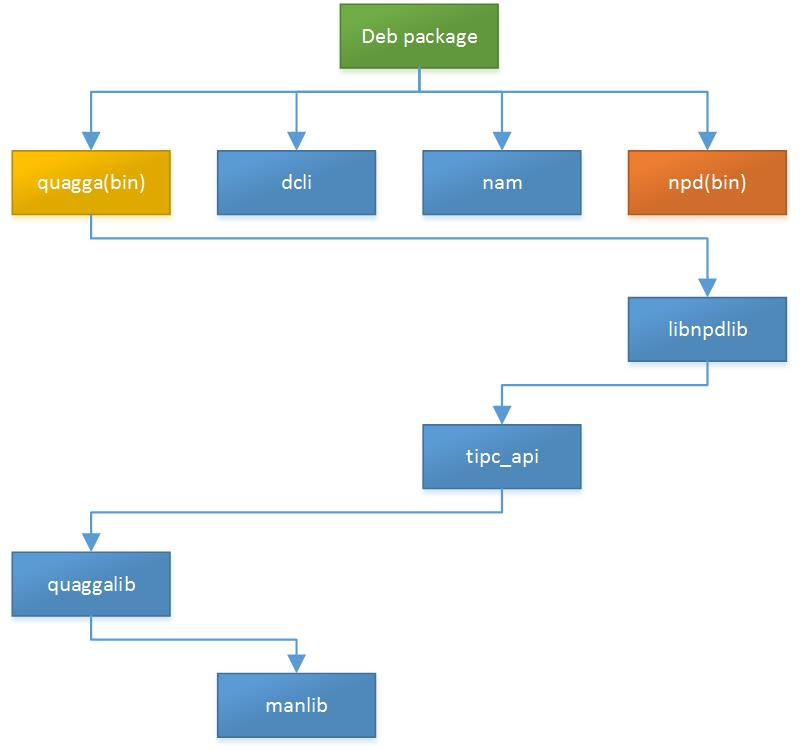

如何添加硬件
本文以x86平台的硬件添加过程为例，来描述如何为CHANOS添加新的硬件。
准备工作
编译环境与目标环境
本文实例的编译环境是x86平台下的虚拟机，Ubuntu10.0.4版本，使用编译环境自带的gcc编译器，目标环境与编译环境相同。
硬件名称
首先要确定一下所要添加硬件的名称。硬件的划分结构分两级，一个是硬件家族（或称板家族，其名称用family_name指代），另外一个则是硬件型号（或称板型号，其名称用board_name指代）。一个板家族包含多个板型号，同时，一个板家族的各个型号共用同一个编译配置（Makefile参数）和rootfs（即deb中的fateroot和image中的文件系统）。也就是说，同一个板家族的各个型号，在编译和封包阶段是完全一样的。
在这里，x86平台的硬件（PC机），我们将它的family_name定为x86，而board_name我们将它定为pcx8601。因为是演示用，所以这个板家族x86中我们就只有一个板型号pcx8601了。但并不是说一个板家族只有一种板型号。
编译配置文件的修改
dev/Makefile（1）
下面这段代码是dev目录下的Makefile（也是整个工程的总Makefile）的开始的一小部分。
#
#
# This file intends for make software system
export MAKE=make
export PROJECT_TOP_DIR=${shell pwd}
ifeq ($(PRODUCT_SERIES),)
export PRODUCT_SERIES=x86
endif
ifeq ($(TARGET_NAME),)
export TARGET_NAME=$(PRODUCT_SERIES)
endif
export PROJECT_BUILD_DIR=$(PROJECT_TOP_DIR)/build/$(TARGET_NAME)
$(shell \
if [ ! -d $(PROJECT_TOP_DIR)/build ]; then \
mkdir $(PROJECT_TOP_DIR)/build; \
fi \
)
$(shell \
if [ ! -d $(PROJECT_BUILD_DIR) ]; then \
mkdir $(PROJECT_BUILD_DIR); \
fi \
)
export BUILD_TARGET_DIR=$(PROJECT_TOP_DIR)/../$(TARGET_NAME)
export BUILD_SYSROOT_DIR=$(BUILD_TARGET_DIR)/sysroot
export BUILD_ROOTFS_DIR=$(BUILD_TARGET_DIR)/rootfs/files
export BUILD_BUILDROOT_DIR=$(BUILD_TARGET_DIR)/buildroot
export USER_ADDITION_LIB_ROOT_PATH=$(BUILD_SYSROOT_DIR)
export PROJECT_TOP_SRC=$(PROJECT_TOP_DIR)/src
#export PROJECT_TOP_SRC=$(PROJECT_TOP_DIR)/src-2.2.1.0006-20121023
#export PROJECT_TOP_SRC=$(PROJECT_TOP_DIR)/src-2.3.1.0002-20130508
#export PROJECT_TOP_SRC=$(PROJECT_TOP_DIR)/src-2.4.1.0001-20140228
include $(PROJECT_TOP_DIR)/make/make.common
从第7行，容易看出“PROJECT_TOP_DIR”代表的是该Makefile所在的目录。而“PRODUCT_SERIES”代表的是将要编译的板家族（从9-11行可以看出，如果没有传入“PRODUCT_SERIES”参数。那么，默认的值是“x86”）。“PROJECT_BUILD_DIR”是工程编译临时文件的存放目录。“BUILD_TARGET_DIR”则是工程编译目标文件的存放目录：“BUILD_SYSROOT_DIR”里存放的是工程编译时需要用到的文件，但这些文件不需要拷贝到目标硬件；“BUILD_BUILDROOT_DIR”是工程编译的时候生成的目标文件所存放的目录；“BUILD_ROOTFS_DIR”是将来要拷贝到目标硬件的所有文件所在的目录。“USER_ADDITION_LIB_ROOT_PATH”是用户自定义的，编译时需要依赖的文件所放的目录（头文件等），从34行可以看出，其就是“BUILD_SYSROOT_DIR”。“PROJECT_TOP_SRC”，一目了然，就是源代码目录的设定了。最后第39行，“make.common”这个文件主要记录了不同板家族配置文件所在的目录，也就是说通过“Makefile”的“PRODUCT_SERIES”参数的传入，就可以加入特定的板家族配置，具体的细节在下面的“make/make.common”小节再展开。
dev/mkx86.sh
为了告诉Makefile我们要编译的是x86这个板家族的目标，所以我们需要创建一个脚本文件，来传递“PRODUCT_SERIES”参数给Makefile。下面就是x86板家族的对应脚本文件内容：
#========= dev/mkx86.sh =========
#!/bin/bash
if [ $# -eq 0 ] ; then
make rebuild_img PRODUCT_SERIES=x86
else
make $1 PRODUCT_SERIES=x86
fi
当我们运行这个脚本的时候，Makefile就会载入“PRODUCT_SERIES”参数，从而编译x86这个板家族。每当我们加入一个新的板家族的时候，都需要写一个新的mk*.sh。
dev/make/
这个目录放的是总Makefile的补充配置，虽然也是全工程有效的一些配置，但是是不同硬件的特定配置，不同于总Makefile是各个硬件通用的。
dev/make/make.common
本文件作为make目录的核心配置文件，起到了通过“PRODUCT_SERIES”参数来确定所需要的对应硬件配置文件，并且将make文件夹下所有的对应配置文件包含在总Makefile中的作用。
#========= dev/make/make.common =========
include $(PROJECT_TOP_DIR)/make/$(PRODUCT_SERIES)/make.$(PRODUCT_SERIES)
include $(PROJECT_TOP_DIR)/make/make.modules
include $(PROJECT_TOP_DIR)/make/make.tools
include $(PROJECT_TOP_DIR)/make/make.rules
include $(PROJECT_TOP_DIR)/make/make.board
include $(PROJECT_TOP_DIR)/make/$(PRODUCT_SERIES)/make.kernel.$(PRODUCT_SERIES)
从上边的代码，我们可以看出，本文件主要做的工作就是包含各个配置文件，而make.common又是包含于dev/Makefile的。所以，最后这些文件的内容都包含在了dev/Makefile中了。在后面的章节中，会介绍这些文件的作用以及它们都需要做哪些改动。
dev/make/x86/make.x86
为了能够加入只有x86板家族才会生效的编译配置，我们需要在“dev/make/x86/”目录下，创建“make.x86”这一文件。本文件通过dev/make/make.common包含于dev/Makefile，从而作为总Makefile中x86板家族目标的特定配置文件。
#========= dev/make/x86/make.x86 =========
#export LINUX_VERSION=2.6.27.7
export CPU_ARCH=x86
export ENDIAN_SUFFIX=
export LIBC_TYPE=glibc
export DRV_LIB_FLAG=X86
export SDK_TYPE=x86
#export SDK_PLATFORM=nsx64
export SDK_VERSION=0.1
include $(PROJECT_TOP_DIR)/make/$(PRODUCT_SERIES)/make.modules.$(PRODUCT_SERIES)
从上边的代码，我们可以看出，本文件主要做的工作就是各个变量的设置：“LINUX_VERSION”的意思是，该硬件所用的linux内核的版本，不过因为本例不涉及内核的编译（仅仅是应用层的安装，内核仍用原有系统的），所以这里直接将这里注释掉了。如果需要内核模块的的编译，或者需要重新编译整个内核并导入镜像的话，那么这里就需要写上对应的内核版本了；“CPU_ARCH”表示的是硬件的CPU体系架构。对于x86板家族来说，这里写的是“x86”，当然写“i386”、“i686”都可以。因为这里不是给系统看的，而是给另外的一处选择编译器的文件看的（“make.tools.x86.glibc”），保证前后一致即可。对于这个文件我会在下面的“dev/make/make.tools.x86.glibc”小节提到。；“LIBC_TYPE”这个也是和编译器的选择有关，也在后面的“dev/make/make.tools.x86.glibc”小节介绍。
在文件的最后，我们可以看到，他包含了另一个文件：dev/make/x86/make.modules.x86。这一文件会在下一节介绍。
dev/make/x86/make.modules.x86
为了能够设置x86板家族支持的功能模块，我们需要将这一配置加入到预编译配置中，而在x86板家族关于所支持功能模块的预编译配置所要凭依的文件就是“make.modules.x86”了。所以，我们要创建这一文件，并将需要支持的模块配置加入其中。
#========= dev/make/x86/make.modules.x86 =========
export PROJECT_TOP_SRC=$(PROJECT_TOP_DIR)/src
AUTEWARE_MODULES_LIST=SYSLOG PAM NPD_IPV6 LOGIN_FILTER WEBMNG \
BRIDGE_STP MIRROR QOS ACL IGMP_SNP \
ARP_INSPECTION ROUTE_POLICY VRRP MVLAN DHCP_CLIENT \
LLDP GVRP LACP DHCP_RELAY DHCP_SNP \
DHCP PIM DVMRP BGP ISIS FIREWALL \
RIP OSPF RMAP DOT1X RADIUS WCPSS \
ROUTE EHTERNET_EEE CHASSIS_SUPPORT \
UDLD ZEBRA FDB_SW_SYNC AAA DIAG DEBUG MAN_SNMP \
POWER_MONITOR FAN_MONITOR TEMPERATURE_MONITOR NTP\
MLD_SNP STACK_INTF ANTI_ATTACK PORTAL \
X86_MODULES \
这里的“AUTEWARE_MODULES_LIST”表示了该板家族所支持的所有模块。对于编译的影响就是加入了以下这些模块相应的宏定义，这样在预编译相应的源文件的时候，会加入相应的代码。例如，这里的“X86_MODULES”，那么，在源代码中就等于加入了“HAVE_X86_MODULES”的宏定义。不过，具体加入的地方，在下一节“dev/make/make.modules”进行说明。
dev/make/make.modules
本文件的主要作用是设置工程全局的加入功能模块相关编译参数。
#========= dev/make/make.modules =========
export INCLUDE_AUTEWARE_MODULES += $(foreach module,$(AUTEWARE_MODULES_LIST), -DHAVE_$(module))
ifneq (,$(findstring DEBUG,$(AUTEWARE_MODULES_LIST)))
export INCLUDE_AUTEWARE_MODULES += -g
endif
这里的“AUTEWARE_MODULES_LIST”是从“dev/make/x86/make.modules.x86”获取到的。通过代码第2行的这句话，可以将每一个x86板家族需要的模块宏定义加入到编译预处理中。然后第4行开始的判断是，如果有“DEBUG”模块的话，就加入“-g”参数。
dev/make/make.tools
对于本文件，我们只讨论其加入特定硬件编译器的部分，下面这段代码是该文件开头的一小部分：
#========= dev/make/make.tools =========
include $(PROJECT_TOP_DIR)/make/make.tools.$(CPU_ARCH)$(ENDIAN_SUFFIX).$(LIBC_TYPE)
这里的第3行，表示了要加入的特定编译器配置，“CPU_ARCH”和“LIBC_TYPE”在“dev/make/x86/make.x86”这一节已经有了具体介绍，在这里就不再冗述。对于x86板家族要加入的编译器设置是，make.tools.x86.glibc这一文件，具体的说明，在下一小节具体说明。
dev/make/make.tools.x86.glibc
由于不同硬件平台的编译环境不同，所以，需要创建不同平台的板家族的编译环境配置文件。本文件是通过上一小节说明的“dev/make/make.tools”文件来包含在总Makefile的。对于x86平台，我们用系统自带的gcc编译器就可以了。对于其他平台的硬件设备，需要使用对应的交叉编译器。
export COMPILER_PREFIX=
export COMPILER_HOST_PREFIX=
#export PATH:=/workspace26/i386-env/cross-tools/bin:${PATH}
#export TARGET_LINUX_VERSION=2.6.27
export CFLAGS +=
export LDFLAGS +=
首先“COMPILER_PREFIX”是编译器的前缀，例如：如果编译器是mips-linux-gcc，那个他的“COMPILER_PREFIX”就是“mips-gcc-”。而“COMPILER_HOST_PREFIX”也是前缀，只不过去掉了最后的那个“-”。“CFLAGS +=”里面是要追加的“CFLAGS”选项，这个是本工程全局要追加的，适用于所有模块。“LDFLAGS”和“PATH”与“CFLAGS”相类似，“TARGET_LINUX_VERSION”可以决定所使用的linux内核源代码版本。对于x86平台，因为编译环境就是X86平台的PC机或虚拟机，gcc和内核直接用系统自带的就好。所以，本例中，这个文件没有特别需要配置的东西。
dev/make/x86/make.kernel.x86
对于不用板家族，他们的生成目标文件的方式与格式等都不尽相同，所以我们需要创建一个x86板家族的生成配置文件。
deb:quagga dcli nam nbm npd
@echo "Preparing product info"
cp ${BUILD_ROOTFS_DIR}/opt/* ${BUILD_ROOTFS_DIR}/usr/ -r
chmod 775 ${BUILD_ROOTFS_DIR} -R
dpkg -b ${BUILD_ROOTFS_DIR} aw.deb
image:
@echo "Preparing product info"
cp ${BUILD_ROOTFS_DIR}/opt/* ${BUILD_ROOTFS_DIR}/usr/ -r
chmod 775 ${BUILD_ROOTFS_DIR} -R
dpkg -b ${BUILD_ROOTFS_DIR} aw.deb
因为，本例只是生成应用层面的软件包（deb格式）。所以，并不涉及到kernel的的编译。我们只需要设定好如何生成deb包即可。代码第3行，我们可以通过“dev/Makefile的开始部分”这一节知道，“BUILD_ROOTFS_DIR”是将来要拷贝到目标硬件的所有文件所在的目录，因为“/usr/”目录是linux的默认lib和bin目录，所以要将相应文件拷到这里。然后代码第4行，之所以改为755的文件权限，是因为做deb包时候的要求。然后第5行，就可以进行deb包的打包工作了。对于deb包的其他配置，可以参照下面有关“rootfs”的相关章节。
quagga模块
quagga模块主要负责的是本工程的Shell界面部分以及网络的三层等功能。本节就来介绍如何修改quagga模块的编译选项。
dev/Makefile（2）
下面这段代码表示的是quagga模块在dev/Makefile中的两个主要的编译目标：quaggalib和quagga（bin）的编译内容（部分省略）：
quaggalib:manlib
@echo "Building quaggalib suit ..."
chmod 777 ${QUAGGA_MOD} -R
if [ ! -d ${PROJECT_BUILD_DIR}/quagga ] ; then \
cd ${QUAGGA_MOD} ; \
./configpkg ${TARGET_NAME} quaggalib; \
cd - ; \
fi
$(MAKE) -C ${PROJECT_BUILD_DIR}/quagga/lib
rm -rf ${BUILD_ROOTFS_DIR}/opt/lib/libzcommon.so*
rm -rf ${BUILD_ROOTFS_DIR}/opt/lib/libzebra.so*
rm -rf ${BUILD_ROOTFS_DIR}/opt/lib/libospf.so*
if [ ! -d ${LIB_EXPORT_DIR} ]; then mkdir ${LIB_EXPORT_DIR}; fi
#................
#省略部分
#................
quagga:libnpdlib
@echo "Building quagga suit ..."
chmod 777 ${QUAGGA_MOD} -R
if [ ! -d ${PROJECT_BUILD_DIR}/$@ ] ; then \
cd ${QUAGGA_MOD} ; \
./configpkg ${TARGET_NAME} $@; \
cd - ; \
fi
$(MAKE) -C ${PROJECT_BUILD_DIR}/$@
rm -rf $(BIN_EXPORT_DIR)/zebra
rm -rf $(BIN_EXPORT_DIR)/vtysh
#................
#省略部分
#................
dev/src/quagga/configpkg
quagga模块对于添加新硬件的时候，需要修改的地方主要就是这个文件。这个文件的主要作用就是判断硬件是何种硬件平台，从而进行相应配置。所以，当我们加入了一个新的硬件平台的硬件的时候，就需要加入一个新的判断，以及该判断分支下所要做的相应配置操作。
在这一文件的最后，有形如以下代码的判断分支部分（中间部分省略）。
#................
#省略部分
#................
if [ $# -gt 0 ]
then
if [ $1 = 'topsec' ]
then
echo "config for TOPSEC with Intel 686 cpu"
config_x86
elif [ $1 = 'as9600' ]
then
echo "config for AS9600 with mips cpu"
config_mips
#................
#省略部分
#................
elif [ $1 = 'ds5600' ]
then
echo "config for ds5600 with Marvell Armada XP cpu"
config_armadaxp
else
echo "unknow cpu type"
fi
else
echo "Didn't specify cpu type, take mips as the default actions."
config_mips
fi
所以我们只需要加上：
elif [ $1 = 'x86' ]
then
echo "config for x86 with i686 cpu"
config_x86_2
这一判断，即可进入“config_x86_2”这一函数，从而进行相应配置。这之后的工作就是编写“config_x86_2”这一函数了。
下面是config_x86_2的实现：
config_x86_2()
{
#################################################
# Check whether dependent libs are ready
if [ -z "$USER_ADDITION_LIB_ROOT_PATH" ]; then
echo "USER_ADDITION_LIB_ROOT_PATH is empty, please setup i686 libs first."
exit -1
else
echo "USER_ADDITION_LIB_ROOT_PATH is "$USER_ADDITION_LIB_ROOT_PATH
fi
#####################################################################
# Use include and library provided by cross-compiler, only add additional path which is not included by gcc suit
LDFLAGS+=" -L"$BUILD_ROOTFS_DIR"/opt/lib -L"$BUILD_ROOTFS_DIR"/usr/lib -L"$BUILD_ROOTFS_DIR"/lib -L"$USER_ADDITION_LIB_ROOT_PATH"/lib "
LDFLAGS+=" -lxml2 -lz "$DCLI_EXPORT_LIB" "
CPPFLAGS+=" "$INCLUDE_AUTEWARE_MODULES" -I"$USER_ADDITION_LIB_ROOT_PATH"/include "$DCLI_EXPORT_INCLUDE" "
CFLAGS+=" "$INCLUDE_AUTEWARE_MODULES" -I"$USER_ADDITION_LIB_ROOT_PATH"/include "$DCLI_EXPORT_INCLUDE" -DDB_INDEX -DDB_INDEX_NEW"
CFLAGS+=" -I"$ACCAPI_DIR" "
CFLAGS+=" -I"$MANAPI_DIR" "
echo $LDFLAGS
#echo $CPPFLAGS
export LDFLAGS
export CPPFLAGS
export CFLAGS
#LIBS+=" "$DCLI_EXPORT_LIBS" -ldbus-1 "
if [ $2 = 'quagga' ]
then
LIBS+=" -lnpdlib -ltipc_api "
export LIBS
fi
[ -d $PROJECT_BUILD_DIR/quagga ] || mkdir $PROJECT_BUILD_DIR/quagga
pushd $PROJECT_BUILD_DIR/quagga
##################Disable features that will not be used.
#../debsrc/quagga-0.99.16/configure --host=i686-unknown-linux-gnu --enable-vtysh --with-libpam --disable-watchquagga
ac_cv_func_realloc_0_nonnull=yes ac_cv_func_malloc_0_nonnull=yes ${PROJECT_TOP_SRC}/${QUAGGA_SRC}/configure --host=i686-unknown-linux-gnu --enable-vtysh --enable-pie=no --enable-zebra --disable-ipv6 --disable-doc --disable-bgpd --disable-ripd --disable-ripngd --disable-ospfd --disable-watchquagga --disable-ospfapi --disable-ospfclient --disable-pie --disable-rtadv --disable-time-check --disable-user --enable-netlink --disable-snmp --disable-doc --disable-group --disable-vty-group --enable-configfile-mask=0666 --enable-logfile-mask=0666 --enable-multipath=8 --sysconfdir=/etc
popd
}
虽然看起来很多，但其实需要修改的地方很少，对于新的硬件平台，只需要将其中和x86有关的内容换成对应的硬件平台就好了。
quagga的编译
quagga的编译配置设置好后，我们就可以先编译quagga模块了。下面对于编译过程中可能会遇到的问题，一一进行说明。
编译quagga目标的命令是：
user@ubuntu:~/work/dev$./mkx86.sh quagga
./mkx86.sh就是我们之前创建的脚本文件，可以告诉Makefile我们要编译的是哪一个板家族的目标。quagga就是我们具体要生成的目标。运行后，可能会出现以下错误提示：
/usr/bin/ld: cannot find -ldbus-1
collect2: ld returned 1 exit status
make[1]: *** [man] Error 1
make[1]: Leaving directory `/home/user/work/dev/src/man/lib'
make: *** [manlib] Error 2
这是由于quagga编译过程中没有找到的dbus库造成的，只需要建立一个名为“libdbus-1.so”的软连接，然后指向现有版本的dbus库即可，以下是操作范例，实际情况可能会有出入（需要root权限）。
root@ubuntu:/lib# ll libdbus-1.so*
lrwxrwxrwx 1 root root 18 2014-06-05 02:25 libdbus-1.so.3 -> libdbus-1.so.3.4.0
-rw-r--r-- 1 root root 227000 2010-03-30 08:07 libdbus-1.so.3.4.0
root@ubuntu:/lib# ln -s ./libdbus-1.so.3 libdbus-1.so
root@ubuntu:/lib# ll libdbus-1.so*
lrwxrwxrwx 1 root root 16 2014-08-07 01:41 libdbus-1.so -> ./libdbus-1.so.3
lrwxrwxrwx 1 root root 18 2014-06-05 02:25 libdbus-1.so.3 -> libdbus-1.so.3.4.0
-rw-r--r-- 1 root root 227000 2010-03-30 08:07 libdbus-1.so.3.4.0
root@ubuntu:/lib#
完成以上操作就不会出现dbus库缺失的问题了，如果是从错误状态下重新编译的话，需要先执行：
user@ubuntu:~/work/dev$./mkx86.sh cleanquagga
完成后就可以重新执行“./mkx86.sh quagga”命令了。下一个常见的问题是：
checking for gawk... gawk
checking for i686-unknown-linux-gnu-gcc... gcc
checking whether the C compiler works... no
configure: error: in `/home/user/work/dev/build/x86/quagga':
configure: error: C compiler cannot create executables
See `config.log' for more details.
/home/user/work/dev/src/quagga
/home/user/work/dev
make -C /home/user/work/dev/build/x86/quagga/lib
make: *** /home/user/work/dev/build/x86/quagga/lib: No such file or directory. Stop.
make: *** [quaggalib] Error 2
通过提示我们似乎看不错问题出在那里，不过通过第6行的提示，我们可以去看一下“config.log”这个文件。这个文件的具体位置是：“dev/build/x86/quagga/config.log”，以下是这一错误状态下，“config.log”的内容范例（实际情况可能会有出入）：
This file contains any messages produced by compilers while
running configure, to aid debugging if configure makes a mistake.
It was created by Quagga configure 0.99.17, which was
generated by GNU Autoconf 2.65. Invocation command line was
$ /home/user/work/dev/src/quagga/debsrc/quagga-0.99.16/configure --host=i686-unknown-linux-gnu --enable-vtysh --enable-pie=no --enable-zebra --disable-ipv6 --disable-doc --disable-bgpd --disable-ripd --disable-ripngd --disable-ospfd --disable-watchquagga --disable-ospfapi --disable-ospfclient --disable-pie --disable-rtadv --disable-time-check --disable-user --enable-netlink --disable-snmp --disable-doc --disable-group --disable-vty-group --enable-configfile-mask=0666 --enable-logfile-mask=0666 --enable-multipath=8 --sysconfdir=/etc
## --------- ##
## Platform. ##
## --------- ##
hostname = ubuntu
uname -m = i686
uname -r = 2.6.32-21-generic
uname -s = Linux
uname -v = #32-Ubuntu SMP Fri Apr 16 08:10:02 UTC 2010
/usr/bin/uname -p = unknown
/bin/uname -X = unknown
/bin/arch = unknown
/usr/bin/arch -k = unknown
/usr/convex/getsysinfo = unknown
/usr/bin/hostinfo = unknown
/bin/machine = unknown
/usr/bin/oslevel = unknown
/bin/universe = unknown
PATH: /usr/local/sbin
PATH: /usr/local/bin
PATH: /usr/sbin
PATH: /usr/bin
PATH: /sbin
PATH: /bin
PATH: /usr/games
## ----------- ##
## Core tests. ##
## ----------- ##
configure:2632: checking build system type
configure:2646: result: i686-pc-linux-gnu
configure:2666: checking host system type
configure:2679: result: i686-unknown-linux-gnu
configure:2699: checking target system type
configure:2712: result: i686-unknown-linux-gnu
configure:2755: checking for a BSD-compatible install
configure:2823: result: /usr/bin/install -c
configure:2834: checking whether build environment is sane
configure:2884: result: yes
configure:2933: checking for i686-unknown-linux-gnu-strip
configure:2960: result: strip
configure:3025: checking for a thread-safe mkdir -p
configure:3064: result: /bin/mkdir -p
configure:3077: checking for gawk
configure:3093: found /usr/bin/gawk
configure:3104: result: gawk
configure:3115: checking whether make sets $(MAKE)
configure:3137: result: yes
configure:3222: checking for gawk
configure:3238: found /usr/bin/gawk
configure:3250: result: gawk
configure:3308: checking for i686-unknown-linux-gnu-gcc
configure:3335: result: gcc
configure:3604: checking for C compiler version
configure:3613: gcc --version >&5
gcc (Ubuntu 4.4.3-4ubuntu5) 4.4.3
Copyright (C) 2009 Free Software Foundation, Inc.
This is free software; see the source for copying conditions. There is NO
warranty; not even for MERCHANTABILITY or FITNESS FOR A PARTICULAR PURPOSE.
configure:3624: $? = 0
configure:3613: gcc -v >&5
Using built-in specs.
Target: i486-linux-gnu
Configured with: ../src/configure -v --with-pkgversion='Ubuntu 4.4.3-4ubuntu5' --with-bugurl=file:///usr/share/doc/gcc-4.4/README.Bugs --enable-languages=c,c++,fortran,objc,obj-c++ --prefix=/usr --enable-shared --enable-multiarch --enable-linker-build-id --with-system-zlib --libexecdir=/usr/lib --without-included-gettext --enable-threads=posix --with-gxx-include-dir=/usr/include/c++/4.4 --program-suffix=-4.4 --enable-nls --enable-clocale=gnu --enable-libstdcxx-debug --enable-plugin --enable-objc-gc --enable-targets=all --disable-werror --with-arch-32=i486 --with-tune=generic --enable-checking=release --build=i486-linux-gnu --host=i486-linux-gnu --target=i486-linux-gnu
Thread model: posix
gcc version 4.4.3 (Ubuntu 4.4.3-4ubuntu5)
configure:3624: $? = 0
configure:3613: gcc -V >&5
gcc: '-V' option must have argument
configure:3624: $? = 1
configure:3613: gcc -qversion >&5
gcc: unrecognized option '-qversion'
gcc: no input files
configure:3624: $? = 1
configure:3644: checking whether the C compiler works
configure:3666: gcc -DHAVE_SYSLOG -DHAVE_PAM -DHAVE_NPD_IPV6 -DHAVE_LOGIN_FILTER -DHAVE_WEBMNG -DHAVE_BRIDGE_STP -DHAVE_MIRROR -DHAVE_QOS -DHAVE_ACL -DHAVE_IGMP_SNP -DHAVE_ARP_INSPECTION -DHAVE_ROUTE_POLICY -DHAVE_VRRP -DHAVE_MVLAN -DHAVE_DHCP_CLIENT -DHAVE_LLDP -DHAVE_GVRP -DHAVE_LACP -DHAVE_DHCP_RELAY -DHAVE_DHCP_SNP -DHAVE_DHCP -DHAVE_PIM -DHAVE_DVMRP -DHAVE_BGP -DHAVE_ISIS -DHAVE_FIREWALL -DHAVE_RIP -DHAVE_OSPF -DHAVE_RMAP -DHAVE_DOT1X -DHAVE_RADIUS -DHAVE_WCPSS -DHAVE_ROUTE -DHAVE_EHTERNET_EEE -DHAVE_CHASSIS_SUPPORT -DHAVE_UDLD -DHAVE_ZEBRA -DHAVE_FDB_SW_SYNC -DHAVE_AAA -DHAVE_DIAG -DHAVE_DEBUG -DHAVE_MAN_SNMP -DHAVE_POWER_MONITOR -DHAVE_FAN_MONITOR -DHAVE_TEMPERATURE_MONITOR -DHAVE_NTP -DHAVE_MLD_SNP -DHAVE_STACK_INTF -DHAVE_ANTI_ATTACK -DHAVE_PORTAL -DHAVE_X86_MODULES -g -I/home/user/work/dev/../x86/sysroot/include -DDB_INDEX -DDB_INDEX_NEW -I/home/user/work/dev/src/accapi -I/home/user/work/dev/src/accapi/man -DHAVE_SYSLOG -DHAVE_PAM -DHAVE_NPD_IPV6 -DHAVE_LOGIN_FILTER -DHAVE_WEBMNG -DHAVE_BRIDGE_STP -DHAVE_MIRROR -DHAVE_QOS -DHAVE_ACL -DHAVE_IGMP_SNP -DHAVE_ARP_INSPECTION -DHAVE_ROUTE_POLICY -DHAVE_VRRP -DHAVE_MVLAN -DHAVE_DHCP_CLIENT -DHAVE_LLDP -DHAVE_GVRP -DHAVE_LACP -DHAVE_DHCP_RELAY -DHAVE_DHCP_SNP -DHAVE_DHCP -DHAVE_PIM -DHAVE_DVMRP -DHAVE_BGP -DHAVE_ISIS -DHAVE_FIREWALL -DHAVE_RIP -DHAVE_OSPF -DHAVE_RMAP -DHAVE_DOT1X -DHAVE_RADIUS -DHAVE_WCPSS -DHAVE_ROUTE -DHAVE_EHTERNET_EEE -DHAVE_CHASSIS_SUPPORT -DHAVE_UDLD -DHAVE_ZEBRA -DHAVE_FDB_SW_SYNC -DHAVE_AAA -DHAVE_DIAG -DHAVE_DEBUG -DHAVE_MAN_SNMP -DHAVE_POWER_MONITOR -DHAVE_FAN_MONITOR -DHAVE_TEMPERATURE_MONITOR -DHAVE_NTP -DHAVE_MLD_SNP -DHAVE_STACK_INTF -DHAVE_ANTI_ATTACK -DHAVE_PORTAL -DHAVE_X86_MODULES -g -I/home/user/work/dev/../x86/sysroot/include -L/home/user/work/dev/../x86/rootfs/files/opt/lib -L/home/user/work/dev/../x86/rootfs/files/usr/lib -L/home/user/work/dev/../x86/rootfs/files/lib -L/home/user/work/dev/../x86/sysroot/lib -lxml2 -lz conftest.c >&5
/usr/bin/ld: cannot find -lxml2
collect2: ld returned 1 exit status
configure:3670: $? = 1
configure:3708: result: no
configure: failed program was:
| /* confdefs.h */
| #define PACKAGE_NAME "Quagga"
| #define PACKAGE_TARNAME "quagga"
| #define PACKAGE_VERSION "0.99.17"
| #define PACKAGE_STRING "Quagga 0.99.17"
| #define PACKAGE_BUGREPORT "https://bugzilla.quagga.net"
| #define PACKAGE_URL ""
| #define PACKAGE "quagga"
| #define VERSION "0.99.17"
| /* end confdefs.h. */
|
| int
| main ()
| {
|
| ;
| return 0;
| }
configure:3713: error: in `/home/user/work/dev/build/x86/quagga':
configure:3717: error: C compiler cannot create executables
See `config.log' for more details.
## ---------------- ##
## Cache variables. ##
## ---------------- ##
ac_cv_build=i686-pc-linux-gnu
ac_cv_env_CC_set=set
ac_cv_env_CC_value=gcc
ac_cv_env_CFLAGS_set=set
ac_cv_env_CFLAGS_value=' -DHAVE_SYSLOG -DHAVE_PAM -DHAVE_NPD_IPV6 -DHAVE_LOGIN_FILTER -DHAVE_WEBMNG -DHAVE_BRIDGE_STP -DHAVE_MIRROR -DHAVE_QOS -DHAVE_ACL -DHAVE_IGMP_SNP -DHAVE_ARP_INSPECTION -DHAVE_ROUTE_POLICY -DHAVE_VRRP -DHAVE_MVLAN -DHAVE_DHCP_CLIENT -DHAVE_LLDP -DHAVE_GVRP -DHAVE_LACP -DHAVE_DHCP_RELAY -DHAVE_DHCP_SNP -DHAVE_DHCP -DHAVE_PIM -DHAVE_DVMRP -DHAVE_BGP -DHAVE_ISIS -DHAVE_FIREWALL -DHAVE_RIP -DHAVE_OSPF -DHAVE_RMAP -DHAVE_DOT1X -DHAVE_RADIUS -DHAVE_WCPSS -DHAVE_ROUTE -DHAVE_EHTERNET_EEE -DHAVE_CHASSIS_SUPPORT -DHAVE_UDLD -DHAVE_ZEBRA -DHAVE_FDB_SW_SYNC -DHAVE_AAA -DHAVE_DIAG -DHAVE_DEBUG -DHAVE_MAN_SNMP -DHAVE_POWER_MONITOR -DHAVE_FAN_MONITOR -DHAVE_TEMPERATURE_MONITOR -DHAVE_NTP -DHAVE_MLD_SNP -DHAVE_STACK_INTF -DHAVE_ANTI_ATTACK -DHAVE_PORTAL -DHAVE_X86_MODULES -g -I/home/user/work/dev/../x86/sysroot/include -DDB_INDEX -DDB_INDEX_NEW -I/home/user/work/dev/src/accapi -I/home/user/work/dev/src/accapi/man '
ac_cv_env_CPPFLAGS_set=set
ac_cv_env_CPPFLAGS_value=' -DHAVE_SYSLOG -DHAVE_PAM -DHAVE_NPD_IPV6 -DHAVE_LOGIN_FILTER -DHAVE_WEBMNG -DHAVE_BRIDGE_STP -DHAVE_MIRROR -DHAVE_QOS -DHAVE_ACL -DHAVE_IGMP_SNP -DHAVE_ARP_INSPECTION -DHAVE_ROUTE_POLICY -DHAVE_VRRP -DHAVE_MVLAN -DHAVE_DHCP_CLIENT -DHAVE_LLDP -DHAVE_GVRP -DHAVE_LACP -DHAVE_DHCP_RELAY -DHAVE_DHCP_SNP -DHAVE_DHCP -DHAVE_PIM -DHAVE_DVMRP -DHAVE_BGP -DHAVE_ISIS -DHAVE_FIREWALL -DHAVE_RIP -DHAVE_OSPF -DHAVE_RMAP -DHAVE_DOT1X -DHAVE_RADIUS -DHAVE_WCPSS -DHAVE_ROUTE -DHAVE_EHTERNET_EEE -DHAVE_CHASSIS_SUPPORT -DHAVE_UDLD -DHAVE_ZEBRA -DHAVE_FDB_SW_SYNC -DHAVE_AAA -DHAVE_DIAG -DHAVE_DEBUG -DHAVE_MAN_SNMP -DHAVE_POWER_MONITOR -DHAVE_FAN_MONITOR -DHAVE_TEMPERATURE_MONITOR -DHAVE_NTP -DHAVE_MLD_SNP -DHAVE_STACK_INTF -DHAVE_ANTI_ATTACK -DHAVE_PORTAL -DHAVE_X86_MODULES -g -I/home/user/work/dev/../x86/sysroot/include '
ac_cv_env_CPP_set=
ac_cv_env_CPP_value=
ac_cv_env_GAWK_set=
ac_cv_env_GAWK_value=
ac_cv_env_LDFLAGS_set=set
ac_cv_env_LDFLAGS_value=' -L/home/user/work/dev/../x86/rootfs/files/opt/lib -L/home/user/work/dev/../x86/rootfs/files/usr/lib -L/home/user/work/dev/../x86/rootfs/files/lib -L/home/user/work/dev/../x86/sysroot/lib -lxml2 -lz '
ac_cv_env_LIBS_set=
ac_cv_env_LIBS_value=
ac_cv_env_build_alias_set=
ac_cv_env_build_alias_value=
ac_cv_env_host_alias_set=set
ac_cv_env_host_alias_value=i686-unknown-linux-gnu
ac_cv_env_target_alias_set=
ac_cv_env_target_alias_value=
ac_cv_func_malloc_0_nonnull=yes
ac_cv_func_realloc_0_nonnull=yes
ac_cv_host=i686-unknown-linux-gnu
ac_cv_path_install='/usr/bin/install -c'
ac_cv_path_mkdir=/bin/mkdir
ac_cv_prog_AWK=gawk
ac_cv_prog_CC=gcc
ac_cv_prog_GAWK=gawk
ac_cv_prog_STRIP=strip
ac_cv_prog_make_make_set=yes
ac_cv_target=i686-unknown-linux-gnu
## ----------------- ##
## Output variables. ##
## ----------------- ##
ACLOCAL='${SHELL} /home/user/work/dev/src/quagga/debsrc/quagga-0.99.16/missing --run aclocal-1.11'
AMDEPBACKSLASH=''
AMDEP_FALSE=''
AMDEP_TRUE=''
AMTAR='${SHELL} /home/user/work/dev/src/quagga/debsrc/quagga-0.99.16/missing --run tar'
AR='ar'
AUTOCONF='${SHELL} /home/user/work/dev/src/quagga/debsrc/quagga-0.99.16/missing --run autoconf'
AUTOHEADER='${SHELL} /home/user/work/dev/src/quagga/debsrc/quagga-0.99.16/missing --run autoheader'
AUTOMAKE='${SHELL} /home/user/work/dev/src/quagga/debsrc/quagga-0.99.16/missing --run automake-1.11'
AWK='gawk'
BGPD=''
CC='gcc'
CCDEPMODE=''
CFLAGS=' -DHAVE_SYSLOG -DHAVE_PAM -DHAVE_NPD_IPV6 -DHAVE_LOGIN_FILTER -DHAVE_WEBMNG -DHAVE_BRIDGE_STP -DHAVE_MIRROR -DHAVE_QOS -DHAVE_ACL -DHAVE_IGMP_SNP -DHAVE_ARP_INSPECTION -DHAVE_ROUTE_POLICY -DHAVE_VRRP -DHAVE_MVLAN -DHAVE_DHCP_CLIENT -DHAVE_LLDP -DHAVE_GVRP -DHAVE_LACP -DHAVE_DHCP_RELAY -DHAVE_DHCP_SNP -DHAVE_DHCP -DHAVE_PIM -DHAVE_DVMRP -DHAVE_BGP -DHAVE_ISIS -DHAVE_FIREWALL -DHAVE_RIP -DHAVE_OSPF -DHAVE_RMAP -DHAVE_DOT1X -DHAVE_RADIUS -DHAVE_WCPSS -DHAVE_ROUTE -DHAVE_EHTERNET_EEE -DHAVE_CHASSIS_SUPPORT -DHAVE_UDLD -DHAVE_ZEBRA -DHAVE_FDB_SW_SYNC -DHAVE_AAA -DHAVE_DIAG -DHAVE_DEBUG -DHAVE_MAN_SNMP -DHAVE_POWER_MONITOR -DHAVE_FAN_MONITOR -DHAVE_TEMPERATURE_MONITOR -DHAVE_NTP -DHAVE_MLD_SNP -DHAVE_STACK_INTF -DHAVE_ANTI_ATTACK -DHAVE_PORTAL -DHAVE_X86_MODULES -g -I/home/user/work/dev/../x86/sysroot/include -DDB_INDEX -DDB_INDEX_NEW -I/home/user/work/dev/src/accapi -I/home/user/work/dev/src/accapi/man '
CONFDATE=''
CPP=''
CPPFLAGS=' -DHAVE_SYSLOG -DHAVE_PAM -DHAVE_NPD_IPV6 -DHAVE_LOGIN_FILTER -DHAVE_WEBMNG -DHAVE_BRIDGE_STP -DHAVE_MIRROR -DHAVE_QOS -DHAVE_ACL -DHAVE_IGMP_SNP -DHAVE_ARP_INSPECTION -DHAVE_ROUTE_POLICY -DHAVE_VRRP -DHAVE_MVLAN -DHAVE_DHCP_CLIENT -DHAVE_LLDP -DHAVE_GVRP -DHAVE_LACP -DHAVE_DHCP_RELAY -DHAVE_DHCP_SNP -DHAVE_DHCP -DHAVE_PIM -DHAVE_DVMRP -DHAVE_BGP -DHAVE_ISIS -DHAVE_FIREWALL -DHAVE_RIP -DHAVE_OSPF -DHAVE_RMAP -DHAVE_DOT1X -DHAVE_RADIUS -DHAVE_WCPSS -DHAVE_ROUTE -DHAVE_EHTERNET_EEE -DHAVE_CHASSIS_SUPPORT -DHAVE_UDLD -DHAVE_ZEBRA -DHAVE_FDB_SW_SYNC -DHAVE_AAA -DHAVE_DIAG -DHAVE_DEBUG -DHAVE_MAN_SNMP -DHAVE_POWER_MONITOR -DHAVE_FAN_MONITOR -DHAVE_TEMPERATURE_MONITOR -DHAVE_NTP -DHAVE_MLD_SNP -DHAVE_STACK_INTF -DHAVE_ANTI_ATTACK -DHAVE_PORTAL -DHAVE_X86_MODULES -g -I/home/user/work/dev/../x86/sysroot/include '
CURSES=''
CYGPATH_W='echo'
DEFS=''
DEPDIR=''
DOC=''
DSYMUTIL=''
DUMPBIN=''
ECHO_C=''
ECHO_N='-n'
ECHO_T=''
EGREP=''
EXEEXT=''
FGREP=''
GAWK='gawk'
GREP=''
HAVE_LIBPCREPOSIX=''
IF_METHOD=''
IF_PROC=''
INCLUDES=''
INSTALL_DATA='${INSTALL} -m 644'
INSTALL_PROGRAM='${INSTALL}'
INSTALL_SCRIPT='${INSTALL}'
INSTALL_STRIP_PROGRAM='$(install_sh) -c -s'
IOCTL_METHOD=''
IPFORWARD=''
ISISD=''
ISIS_TOPOLOGY_DIR=''
ISIS_TOPOLOGY_INCLUDES=''
ISIS_TOPOLOGY_LIB=''
KERNEL_METHOD=''
LD='ld'
LDFLAGS=' -L/home/user/work/dev/../x86/rootfs/files/opt/lib -L/home/user/work/dev/../x86/rootfs/files/usr/lib -L/home/user/work/dev/../x86/rootfs/files/lib -L/home/user/work/dev/../x86/sysroot/lib -lxml2 -lz '
LIBAUTELAN=''
LIBCAP=''
LIBM=''
LIBOBJS=''
LIBPAM=''
LIBREADLINE=''
LIBS=''
LIBTOOL=''
LIB_IPV6=''
LIB_REGEX=''
LIPO=''
LN_S=''
LTLIBOBJS=''
MAKEINFO='${SHELL} /home/user/work/dev/src/quagga/debsrc/quagga-0.99.16/missing --run makeinfo'
MKDIR_P='/bin/mkdir -p'
MULTIPATH_NUM=''
NM='nm'
NMEDIT=''
OBJDUMP='objdump'
OBJEXT=''
OSPF6D=''
OSPFAPI=''
OSPFCLIENT=''
OSPFD=''
OTHER_METHOD=''
OTOOL64=''
OTOOL=''
PACKAGE='quagga'
PACKAGE_BUGREPORT='https://bugzilla.quagga.net'
PACKAGE_NAME='Quagga'
PACKAGE_STRING='Quagga 0.99.17'
PACKAGE_TARNAME='quagga'
PACKAGE_URL=''
PACKAGE_VERSION='0.99.17'
PATH_SEPARATOR=':'
PERL=''
PICFLAGS=''
PILDFLAGS=''
RANLIB='ranlib'
RIPD=''
RIPNGD=''
RTREAD_METHOD=''
RT_METHOD=''
SED=''
SET_MAKE=''
SHELL='/bin/bash'
SNMP_INCLUDES=''
SOLARIS=''
STRIP='strip'
VERSION='0.99.17'
VTYSH=''
WATCHQUAGGA=''
ZEBRA=''
ac_ct_CC=''
ac_ct_DUMPBIN=''
am__EXEEXT_FALSE=''
am__EXEEXT_TRUE=''
am__fastdepCC_FALSE=''
am__fastdepCC_TRUE=''
am__include=''
am__isrc=' -I$(srcdir)'
am__leading_dot='.'
am__quote=''
am__tar='${AMTAR} chof - "$$tardir"'
am__untar='${AMTAR} xf -'
bindir='${exec_prefix}/bin'
build='i686-pc-linux-gnu'
build_alias=''
build_cpu='i686'
build_os='linux-gnu'
build_vendor='pc'
datadir='${datarootdir}'
datarootdir='${prefix}/share'
docdir='${datarootdir}/doc/${PACKAGE_TARNAME}'
dvidir='${docdir}'
enable_group='no'
enable_user='no'
enable_vty_group='no'
exampledir='/etc'
exec_prefix='NONE'
host='i686-unknown-linux-gnu'
host_alias='i686-unknown-linux-gnu'
host_cpu='i686'
host_os='linux-gnu'
host_vendor='unknown'
htmldir='${docdir}'
includedir='${prefix}/include'
infodir='${datarootdir}/info'
install_sh='${SHELL} /home/user/work/dev/src/quagga/debsrc/quagga-0.99.16/install-sh'
libdir='${exec_prefix}/lib'
libexecdir='${exec_prefix}/libexec'
localedir='${datarootdir}/locale'
localstatedir='${prefix}/var'
lt_ECHO='echo'
mandir='${datarootdir}/man'
mkdir_p='/bin/mkdir -p'
oldincludedir='/usr/include'
pdfdir='${docdir}'
pkgsrcdir=''
pkgsrcrcdir=''
prefix='NONE'
program_transform_name='s,x,x,'
psdir='${docdir}'
quagga_statedir=''
sbindir='${exec_prefix}/sbin'
sharedstatedir='${prefix}/com'
sysconfdir='/etc'
target='i686-unknown-linux-gnu'
target_alias=''
target_cpu='i686'
target_os='linux-gnu'
target_vendor='unknown'
## ----------- ##
## confdefs.h. ##
## ----------- ##
/* confdefs.h */
#define PACKAGE_NAME "Quagga"
#define PACKAGE_TARNAME "quagga"
#define PACKAGE_VERSION "0.99.17"
#define PACKAGE_STRING "Quagga 0.99.17"
#define PACKAGE_BUGREPORT "https://bugzilla.quagga.net"
#define PACKAGE_URL ""
#define PACKAGE "quagga"
#define VERSION "0.99.17"
configure: exit 77
通过第91行的提示我们可以看到，是因为缺少xml2的库，可以依照dbus库的方法：
root@ubuntu:/usr/lib# ll libxml2.so*
lrwxrwxrwx 1 root root 16 2014-06-05 02:25 libxml2.so.2 -> libxml2.so.2.7.6
-rw-r--r-- 1 root root 1212988 2009-12-15 20:50 libxml2.so.2.7.6
root@ubuntu:/usr/lib# ln -s libxml2.so.2 libxml2.so
root@ubuntu:/usr/lib# ll libxml2.so*
lrwxrwxrwx 1 root root 12 2014-08-07 02:16 libxml2.so -> libxml2.so.2
lrwxrwxrwx 1 root root 16 2014-06-05 02:25 libxml2.so.2 -> libxml2.so.2.7.6
-rw-r--r-- 1 root root 1212988 2009-12-15 20:50 libxml2.so.2.7.6
root@ubuntu:/usr/lib#
之后还是执行“./mkx86.sh cleanquagga”后，再重新“./mkx86.sh quagga”。如果还出现类似的错误，一般来说就这样反复的建立软连接到新的版本库就可以了。如果实在没有相应的库的话，就需要使用apt-get（Ubuntu）等命令来获取相应库了。库文件主要的两个目录是“/usr/lib/”和“/lib/”这两个目录，建立软连接的时候都需要管理员权限，在这里就不多做解释。还可能会出现缺失的库有：“/lib/libz.so”，具体的修改方法，在这里就不在多说了。下面来说下，下一个可能会出现的错误：
configure: error: vtysh needs libreadline but was not found and usable on your system.
/home/user/work/dev/src/quagga
/home/user/work/dev
make -C /home/user/work/dev/build/x86/quagga/lib
make: *** /home/user/work/dev/build/x86/quagga/lib: No such file or directory. Stop.
make: *** [quaggalib] Error 2
这个其实也是库缺失的错误，也是通过上面介绍的方法就可以解决，“libreadline.so*”的位置就在“/lib/”下，这里也不再多说。之后，我再强调一下，每次重新编译“quagga”之前，都要“cleanquagga”一下。
如果打印结果最后几行出现形如：
if [ -e /home/user/work/dev/build/x86/quagga/bgpd/.libs/bgpd ] ; then \
cp /home/user/work/dev/build/x86/quagga/bgpd/.libs/bgpd /home/user/work/dev/../x86/buildroot/export/opt/bin ; \
cp -d /home/user/work/dev/../x86/buildroot/export/opt/bin/bgpd /home/user/work/dev/../x86/rootfs/files/opt/bin/ ; \
chmod 777 /home/user/work/dev/../x86/rootfs/files/opt/bin/bgpd ; \
fi
if [ -e /home/user/work/dev/build/x86/quagga/isisd/.libs/isisd ] ; then \
cp /home/user/work/dev/build/x86/quagga/isisd/.libs/isisd /home/user/work/dev/../x86/buildroot/export/opt/bin ; \
cp -d /home/user/work/dev/../x86/buildroot/export/opt/bin/isisd /home/user/work/dev/../x86/rootfs/files/opt/bin/ ; \
chmod 777 /home/user/work/dev/../x86/rootfs/files/opt/bin/isisd ; \
fi
的情况。那么恭喜你，quagga目标的生成工作成功了。下面附上，编译的各个目标的依赖情况：
我们可以发现，当我们生成完quagga目标后，make命令还帮我们自动完成了“libnpdlib”、“tipc_api”、“quaggalib”和“manlib”这几个目标，可以说如果成功生成了quagga目标就等于完成了一半的生成任务。另外，可以结合这里看一下模块调用关系的说明。
npd模块
npd模块作为本工程的核心模块，完成了本工程的绝大部分核心功能。具体一点就是各个硬件数据库的同步工作、网络管理功能以及响应用户界面层模块（如vtysh发来的请求）的用户请求并返回结果等工作。由于大部分的直接与调用硬件API的工作由nam模块来做，所以，npd模块的大部分功能能够与硬件设备隔离。而我们需要改的地方主要是关于板定义的地方（对硬件设备的识别等）。
以x86板家族为例，在npd模块中添加了四个文件，“dev/src/npdsuit/npd/src/app/nh_series/”目录下的：“nh_x86_spec_init.c”、“pcx8601_conn.c”、“pcx8601_feature.c”和“pcx8601_param.c”，并且修改了该目录下的“nh_product_common_init.c”文件。在之后的章节中，会逐一介绍x86板家族是如何编写或修改这些文件的。
nh_x86_spec_init.c
以下是该文件的部分内容：
#ifdef __cplusplus
extern "C"
{
#endif
#include "sysdef/npd_sysdef.h"
#include "sysdef/returncode.h"
#include <stdio.h>
#include <stdlib.h>
#include <stddef.h>
#................
#省略部分
#................
#include "nh_product_init.h"
#include "nh_product_info.h"
#include "pcx8601_feature.c"
#include "dummy_feature.c"
board_spec_fix_param_t *nh_series_board_spec_param_arr[] =
{
[PPAL_BOARD_TYPE_TSM9002] = &dummy_spec_param,
[PPAL_BOARD_TYPE_TGM9048] = &dummy_spec_param,
[PPAL_BOARD_TYPE_TSM9024FC] = &dummy_spec_param,
[PPAL_BOARD_TYPE_TGM9024] = &dummy_spec_param,
[PPAL_BOARD_TYPE_PCX8601] = &pcx8601_spec_param,
[PPAL_BOARD_TYPE_NH_MAX] = NULL,
};
/* family feature */
struct family_spec_fix_param_s t9k_family_spec_param =
{
.family_type = FAMILY_TYPE_T9000,
.board_spec_param_arr = nh_series_board_spec_param_arr,
};
struct family_spec_fix_param_s * family_spec_type_arr[] =
{
[FAMILY_TYPE_T9000] = &t9k_family_spec_param,
};
#ifdef __cplusplus
}
#endif
可以看到第20行，“pcx8601_feature.c”这个文件被包含了进来，这个是关于pcx8601板型号的npd配置信息，涉及了对pcx8601的基本配置。第29行，从而将pcx8601这一板型号加入到了可识别的型号集合中。第36行设定了产品家族的参数，将x86板家族加入到了T9000产品家族中。第42行的作用使刚刚的配置在全局上生效。总的来说，这里大部分按照原有其他硬件的写法写就可以，注意将"pcx8601_feature.c"文件包含进去就可以了。
pcx8601_feature.c
本文件用于定义pcx8601板型号和板管理相关的操作函数，下面是本文件中的“pcx8601_spec_param”全局变量：
board_spec_fix_param_t pcx8601_spec_param =
{
.board_type = PPAL_BOARD_TYPE_PCX8601,
.fiber_module_fix_param = &pcx8601_sfp_param,
.ams_param = {
[0] = &pcx8601_asic_switch,
[2] = &pcx8601_ctrl_switch
},
.slotno_get = &pcx8601_slotno_get,
.reset = &pcx8601_local_reset,
.get_reset_type = &pcx8601_reset_type,
.sys_led_lighting = &pcx8601_led_lighting,
.pne_monitor_start = &pcx8601_pne_mon_start,
.board_man_param_get = &t9000_board_mnparam_get,
.local_conn_init = &pcx8601_local_conn_init,
.system_conn_init = &pcx8601_system_conn_init,
.system_conn_deinit = &pcx8601_system_conn_deinit,
.asic_config_init = &pcx8601_sal_config_init_defaults
};
“pcx8601_spec_param”这一“board_spec_fix_param_t”结构体变量关联于“nh_product_common_init.c”中的“nh_series_board_spec_param_arr”（见于上一节代码的29行）。这样，pcx8601就能够被正确的识别，并执行相关的板管理操作。对于本文件的其他地方，可以暂时不用修改，直接使用原有的代码就好（注意替换“pcx8601”和“x86”就好，大小写都有）。
nh_product_common_init.c
本文件的功能可以理解为npd所支持的所有板卡的板管理配置数据结构文件。下面是本文件的源代码
#ifdef __cplusplus
extern "C"
{
#endif
#include "sysdef/npd_sysdef.h"
#include "sysdef/returncode.h"
#include <stdio.h>
#include <stdlib.h>
#include <stddef.h>
#include <string.h>
#include <time.h>
#include <sys/types.h>
#include <sys/ioctl.h>
#include <sys/stat.h>
#include <fcntl.h>
#include "util/npd_list.h"
#include "lib/common_api.h"
#include "dbus/npd/npd_dbus_def.h"
#include "npd/nbm/npd_bmapi.h"
#include "npd/nam/npd_amapi.h"
#include "nbm/nbm_api.h"
#include "nam/nam_main_api.h"
#include "board/ts_product_feature.h"
#include "nbm/nbm_cpld.h"
#include "os.h"
#include "npd_log.h"
#include "npd/nbm/npd_cplddef.h"
#include "product_feature.h"
#include "product_conn.h"
#include "npd_product.h"
#include "npd_c_slot.h"
#include "nh_product_feature.h"
#include "nh_product_init.h"
#include "nh_product_common_info.h"
#include "as_product_info.h"
#include "nh_product_info.h"
#include "us_product_info.h"
#include "t9003_conn.c"
#include "t9006_conn.c"
#include "t9010_conn.c"
#include "us_3000_conn.c"
#include "t9014_conn.c"
#include "t9003_feature.c"
#include "t9006_feature.c"
#include "t9010_feature.c"
#include "t9014_feature.c"
#include "nh_3052_real_feature.c"
#include "us_3000_feature.c"
#include "tsm9002_conn.c"
#include "tsm9002_param.c"
#include "tgm9048_conn.c"
#include "tgm9048_param.c"
#include "tsm9024fc_conn.c"
#include "tsm9024fc_param.c"
#include "tgm9024_conn.c"
#include "tgm9024_param.c"
#include "txm9004_conn.c"
#include "txm9004_param.c"
#include "nh_3052_conn.c"
#include "nh_3052_param.c"
#include "as6603_conn.c"
#include "as6603_feature.c"
#include "ax63ge24_conn.c"
#include "ax63ge24_param.c"
#include "ax63ge48_conn.c"
#include "ax63ge48_param.c"
#include "ax63ge24i_conn.c"
#include "ax63ge24i_param.c"
#include "cgm9048_conn.c"
#include "cgm9048_param.c"
#include "cgm9048s_conn.c"
#include "cgm9048s_param.c"
#include "g9604x_conn.c"
#include "g9604x_param.c"
#include "fw9001_conn.c"
#include "fw9001_param.c"
#include "as6612c_conn.c"
#include "as6612c_param.c"
#include "pcx8601_conn.c"
#include "pcx8601_param.c"
#include "us_3000_board_conn.c"
#include "us_3000_board_param.c"
#include "asx6602_conn.c"
#include "asx6602_param.c"
#include "asx9604l_conn.c"
#include "asx9604l_param.c"
#include "as9612x_conn.c"
#include "as9612x_param.c"
#include "g96sup_conn.c"
#include "g96sup_param.c"
unsigned int PPAL_BOARD_TYPE_NONE = PPAL_BOARD_TYPE_NH_NONE;
unsigned int PPAL_BOARD_TYPE_MAX = PPAL_BOARD_TYPE_NH_MAX;
unsigned int PRODUCT_MAX_NUM = PRODUCT_NH_MAX_NUM;
/* t9k series */
product_fix_param_t *nh_series_product_param_arr[] =
{
[PRODUCT_T9010] = &t9010_fix_param,
[PRODUCT_T9006] = &t9006_fix_param,
[PRODUCT_T9003] = &t9003_fix_param,
[PRODUCT_AS6603] = &as6603_fix_param,
[PRODUCT_T9014] = &t9014_fix_param,
[PRODUCT_NH_MAX_NUM] = NULL,
};
product_conn_type_t *nh_series_product_conn_arr[] =
{
[PRODUCT_T9010] = &t9010_product_conn,
[PRODUCT_T9006] = &t9006_product_conn,
[PRODUCT_T9003] = &t9003_product_conn,
[PRODUCT_AS6603] = &as6603_product_conn,
[PRODUCT_T9014] = &t9014_product_conn,
[PRODUCT_NH_MAX_NUM] = NULL,
};
board_conn_type_t *nh_series_board_conn_arr[] =
{
[PPAL_BOARD_TYPE_NH_NONE] = &none_board_type_conn,
[PPAL_BOARD_TYPE_TSM9002] = &tsm9002_board_conn,
[PPAL_BOARD_TYPE_TGM9048] = &tgm9048_board_conn,
[PPAL_BOARD_TYPE_TSM9024FC] = &tsm9024fc_board_conn,
[PPAL_BOARD_TYPE_TGM9024] = &tgm9024_board_conn,
[PPAL_BOARD_TYPE_TXM9004] = &txm9004_board_conn,
[PPAL_BOARD_TYPE_AX63GE24] = &ax63ge24_board_conn,
[PPAL_BOARD_TYPE_AX63GE24I] = &ax63ge24i_board_conn,
[PPAL_BOARD_TYPE_AX63GE48] = &ax63ge48_board_conn,
[PPAL_BOARD_TYPE_CGM9048] = &cgm9048_board_conn,
[PPAL_BOARD_TYPE_FW9001] = &fw9001_board_conn,
[PPAL_BOARD_TYPE_ASX6602] = &asx6602_board_conn,
[PPAL_BOARD_TYPE_ASX9604L] = &asx9604l_board_conn,
[PPAL_BOARD_TYPE_AS9612X] = &as9612x_board_conn,
[PPAL_BOARD_TYPE_AS6612C] = &as6612c_board_conn,
[PPAL_BOARD_TYPE_G96SUP] = &g96sup_board_conn,
[PPAL_BOARD_TYPE_G9604X] = &g9604x_board_conn,
[PPAL_BOARD_TYPE_CGM9048S] = &cgm9048s_board_conn,
[PPAL_BOARD_TYPE_PCX8601] = &pcx8601_board_conn,
[PPAL_BOARD_TYPE_NH_MAX] = NULL,
};
board_fix_param_t *nh_series_board_param_arr[] =
{
[PPAL_BOARD_TYPE_TSM9002] = &tsm9002_param,
[PPAL_BOARD_TYPE_TGM9048] = &tgm9048_param,
[PPAL_BOARD_TYPE_TSM9024FC] = &tsm9024fc_param,
[PPAL_BOARD_TYPE_TGM9024] = &tgm9024_param,
[PPAL_BOARD_TYPE_TXM9004] = &txm9004_param,
[PPAL_BOARD_TYPE_AX63GE24] = &ax63ge24_param,
[PPAL_BOARD_TYPE_AX63GE24I] = &ax63ge24i_param,
[PPAL_BOARD_TYPE_AX63GE48] = &ax63ge48_param,
[PPAL_BOARD_TYPE_CGM9048] = &cgm9048_param,
[PPAL_BOARD_TYPE_FW9001] = &fw9001_param,
[PPAL_BOARD_TYPE_ASX6602] = &asx6602_param,
[PPAL_BOARD_TYPE_ASX9604L] = &asx9604l_param,
[PPAL_BOARD_TYPE_AS9612X] = &as9612x_param,
[PPAL_BOARD_TYPE_AS6612C] = &as6612c_param,
[PPAL_BOARD_TYPE_G96SUP] = &g96sup_param,
[PPAL_BOARD_TYPE_G9604X] = &g9604x_param,
[PPAL_BOARD_TYPE_CGM9048S] = &cgm9048s_param,
[PPAL_BOARD_TYPE_PCX8601] = &pcx8601_param,
[PPAL_BOARD_TYPE_NH_MAX] = NULL,
};
struct board_conn_type_s nh_series_board_conn_arr_fullmesh[] =
{
};
board_conn_type_t *as_series_board_conn_arr[] =
{
[PPAL_BOARD_TYPE_TGM9048] = &tgm9048_board_conn,
[PPAL_BOARD_TYPE_TSM9024FC] = &tsm9024fc_board_conn,
[PPAL_BOARD_TYPE_TGM9024] = &tgm9024_board_conn,
[PPAL_BOARD_TYPE_TXM9004] = &txm9004_board_conn,
[PPAL_BOARD_TYPE_AX63GE24] = &ax63ge24_board_conn,
[PPAL_BOARD_TYPE_AX63GE24I] = &ax63ge24i_board_conn,
[PPAL_BOARD_TYPE_AX63GE48] = &ax63ge48_board_conn,
[PPAL_BOARD_TYPE_ASX6602] = &asx6602_board_conn,
[PPAL_BOARD_TYPE_AS9612X] = &as9612x_board_conn,
[PPAL_BOARD_TYPE_NH_MAX] = NULL,
};
board_fix_param_t *as_series_board_param_arr[] =
{
[PPAL_BOARD_TYPE_TGM9048] = &tgm9048_param,
[PPAL_BOARD_TYPE_TSM9024FC] = &tsm9024fc_param,
[PPAL_BOARD_TYPE_TGM9024] = &tgm9024_param,
[PPAL_BOARD_TYPE_TXM9004] = &txm9004_param,
[PPAL_BOARD_TYPE_AX63GE24] = &ax63ge24_param,
[PPAL_BOARD_TYPE_AX63GE24I] = &ax63ge24i_param,
[PPAL_BOARD_TYPE_AX63GE48] = &ax63ge48_param,
[PPAL_BOARD_TYPE_ASX6602] = &asx6602_param,
[PPAL_BOARD_TYPE_AS9612X] = &as9612x_param,
[PPAL_BOARD_TYPE_NH_MAX] = NULL,
};
struct board_conn_type_s as_series_board_conn_arr_fullmesh[] =
{
};
/* au3k series */
product_fix_param_t *au3k_series_product_param_arr[] =
{
[PRODUCT_NH_3052] = &nh3052_real_fix_param,
[PRODUCT_NH_MAX_NUM] = NULL,
};
product_conn_type_t *au3k_series_product_conn_arr[] =
{
[PRODUCT_NH_3052] = &nh_3052_product_conn,
[PRODUCT_NH_MAX_NUM] = NULL,
};
struct board_conn_type_s *au3k_series_board_conn_arr[] =
{
[PPAL_BOARD_TYPE_NH_3052] = &nh_31msb_board_conn,
[PPAL_BOARD_TYPE_FW9001] = &fw9001_board_conn,
[PPAL_BOARD_TYPE_PCX8601] = &pcx8601_board_conn,
[PPAL_BOARD_TYPE_NH_MAX] = NULL,
};
struct board_fix_param_t *au3k_series_board_param_arr[] =
{
[PPAL_BOARD_TYPE_NH_3052] = &nh_31msb_param,
[PPAL_BOARD_TYPE_NH_MAX] = NULL,
};
/* us3k series */
product_fix_param_t *us3k_series_product_param_arr[] =
{
[PRODUCT_US3000] = &us3000_fix_param,
[PRODUCT_NH_MAX_NUM] = NULL,
};
product_conn_type_t *us3k_series_product_conn_arr[] =
{
[PRODUCT_US3000] = &us3000_product_conn,
[PRODUCT_NH_MAX_NUM] = NULL,
};
struct board_conn_type_s *us3k_series_board_conn_arr[] =
{
[PPAL_BOARD_TYPE_US_3000] = &us3000_board_board_conn,
[PPAL_BOARD_TYPE_NH_MAX] = NULL,
};
struct board_fix_param_t *us3k_series_board_param_arr[] =
{
[PPAL_BOARD_TYPE_US_3000] = &us3000_board_param,
[PPAL_BOARD_TYPE_NH_MAX] = NULL,
};
/* family feature */
family_common_fix_param_t as6600_family_param =
{
.family_type = FAMILY_TYPE_AS6600,
.product_param_arr = nh_series_product_param_arr,
.product_conn_arr = nh_series_product_conn_arr,
.board_conn_arr = as_series_board_conn_arr,
.board_conn_fullmesh_arr = as_series_board_conn_arr,
.board_param_arr = as_series_board_param_arr,
};
/* family feature */
family_common_fix_param_t t9k_family_param =
{
.family_type = FAMILY_TYPE_T9000,
.product_param_arr = nh_series_product_param_arr,
.product_conn_arr = nh_series_product_conn_arr,
.board_conn_arr = nh_series_board_conn_arr,
.board_conn_fullmesh_arr = nh_series_board_conn_arr,
.board_param_arr = nh_series_board_param_arr,
};
family_common_fix_param_t au3k_family_param =
{
.family_type = FAMILY_TYPE_AU3000,
.product_param_arr = au3k_series_product_param_arr,
.product_conn_arr = au3k_series_product_conn_arr,
.board_conn_arr = au3k_series_board_conn_arr,
.board_conn_fullmesh_arr = au3k_series_board_conn_arr,
.board_param_arr = au3k_series_board_param_arr,
};
family_common_fix_param_t us3k_family_param =
{
.family_type = FAMILY_TYPE_US3000,
.product_param_arr = us3k_series_product_param_arr,
.product_conn_arr = us3k_series_product_conn_arr,
.board_conn_arr = us3k_series_board_conn_arr,
.board_conn_fullmesh_arr = us3k_series_board_conn_arr,
.board_param_arr = us3k_series_board_param_arr,
};
struct family_common_fix_param_s * family_type_arr[] =
{
[FAMILY_TYPE_T9000] = &t9k_family_param,
[FAMILY_TYPE_AU3000] = &au3k_family_param,
[FAMILY_TYPE_AS6600] = &as6600_family_param,
[FAMILY_TYPE_US3000] = &us3k_family_param,
};
extern struct family_spec_fix_param_s *family_spec_type_arr[];
long nh_product_info_init(void)
{
struct family_common_fix_param_s* sys_family_param = family_type_arr[productinfo.family_type];
struct family_spec_fix_param_s* sys_family_spec_param = family_spec_type_arr[productinfo.family_type];
npd_syslog_dbg("product is family type %d.\n", productinfo.family_type);
register_product_param_array(sys_family_param->product_param_arr);
register_product_conn_array(sys_family_param->product_conn_arr);
register_board_conn_array(sys_family_param->board_conn_arr);
register_board_conn_fullmesh_array(sys_family_param->board_conn_fullmesh_arr);
register_board_param_array(sys_family_param->board_param_arr);
register_board_spec_param_array(sys_family_spec_param->board_spec_param_arr);
return 0;
}
long nh_product_param_read()
{
/*open file "snros_product_param.cfg"*/
/*read snros_product_param and init ppal_product_info, n_param and g_sysinfo_backboard and g_sysinfo_module*/
return NPD_SUCCESS;
}
void product_init(void)
{
productinfo.family_type = nh_family_type_get();
productinfo.product_id = nh_product_hw_code_get();
productinfo.local_module_id = nh_local_module_hw_code_get();
productinfo.local_module_hw_version = nh_board_hw_version_get();
productinfo.local_chassis_slot_no = nh_board_hw_slotno_get();
SYS_MASTER_ACTIVE_SLOT_INDEX = -1;
nh_product_info_init();
}
#ifdef __cplusplus
}
#endif
代码第88行和第89行所包含进来的文件就是“pcx8601”板管理模块相关的数据结构。这两个文件会在下面两个小节具体介绍。代码第152行、第175行以及第236行，都是将前面包含进来的两个文件的核心全局变量赋值到产品定义中，以便在npd中生效。
pcx8601_conn.c
本文件的主要功能是：配置“pcx8601”的物理端口哪些是业务端口而哪些是用于板间通信的端口。通过包含到上一节的“nh_product_common_init.c”文件，从而能够将这些配置告诉给npd。
/*! @defgroup pcx8601_def pcx8601板定义模块
@{
*/
/*! 虚拟端口映射
@file pcx8601_conn.c
@note 用于定义该板业务端口和板间通讯端口所对应的物理端口
*/
#ifdef __cplusplus
extern "C"
{
#endif
/*! 用于定义该板的板间通讯用级联端口的数据结构.
@note 本例中没有涉及板间通讯，所以这里直接将slot_port的初值设为"-1"，即表示没有板间通讯级联端口.
@see plane_conn_s
pcx8601_board_conn
*/
struct plane_conn_s pcx8601_plane_conn[] =
{
{
.slot_port = -1
}
};
/*! 用于定义该板的业务端口的数据结构.
@note 本例中的业务端口数目设定的是24个，所以，相应的，这个数组需要24个这样的元素.
@arg chip_port:
- unit: 代表了是哪一个交换芯片.
- unit_port: 代表了是unit这个芯片的哪个端口.
@arg user_type: 定义这一端口的端口类型.
@arg driver_type: 使用哪一个nam层.
@see panel_conn_s
pcx8601_board_conn
*/
struct panel_conn_s pcx8601_panel_conn[] =
{
{
.panel_port = 1,
.chip_port = {
[ASIC_SWITCH_TYPE] = {
.unit = 0,
.unit_port = 1,
.distance = 0
},
},
.subslot_port = -1,
.plane_port = {-1, -1},
.bcast_bus = -1,
.user_type = ETH_INVALID,
.driver_type = MODULE_DRIVER_NAM_X86, /*<inc>*/
},
{
.panel_port = 2,
.chip_port = {
[ASIC_SWITCH_TYPE] = {
.unit = 0,
.unit_port = 2,
.distance = 0
},
},
.subslot_port = -1,
.plane_port = {-1, -1},
.bcast_bus = -1,
.user_type = ETH_INVALID,
.driver_type = MODULE_DRIVER_NAM_X86, /*<inc>*/
},
{
.panel_port = 3,
.chip_port = {
[ASIC_SWITCH_TYPE] = {
.unit = 0,
.unit_port = 3,
.distance = 0
},
},
.subslot_port = -1,
.plane_port = {-1, -1},
.bcast_bus = -1,
.user_type = ETH_INVALID,
.driver_type = MODULE_DRIVER_NAM_X86,
},
{
.panel_port = 4,
.chip_port = {
[ASIC_SWITCH_TYPE] = {
.unit = 0,
.unit_port = 4,
.distance = 0
},
},
.subslot_port = -1,
.plane_port = {-1, -1},
.bcast_bus = -1,
.user_type = ETH_INVALID,
.driver_type = MODULE_DRIVER_NAM_X86,
},
{
.panel_port = 5,
.chip_port = {
[ASIC_SWITCH_TYPE] = {
.unit = 0,
.unit_port = 5,
.distance = 0
},
},
.subslot_port = -1,
.plane_port = {-1, -1},
.bcast_bus = -1,
.user_type = ETH_INVALID,
.driver_type = MODULE_DRIVER_NAM_X86,
},
{
.panel_port = 6,
.chip_port = {
[ASIC_SWITCH_TYPE] = {
.unit = 0,
.unit_port = 6,
.distance = 0
},
},
.subslot_port = -1,
.plane_port = {-1, -1},
.bcast_bus = -1,
.user_type = ETH_INVALID,
.driver_type = MODULE_DRIVER_NAM_X86,
},
{
.panel_port = 7,
.chip_port = {
[ASIC_SWITCH_TYPE] = {
.unit = 0,
.unit_port = 7,
.distance = 0
},
},
.subslot_port = -1,
.plane_port = {-1, -1},
.bcast_bus = -1,
.user_type = ETH_INVALID,
.driver_type = MODULE_DRIVER_NAM_X86,
},
{
.panel_port = 8,
.chip_port = {
[ASIC_SWITCH_TYPE] = {
.unit = 0,
.unit_port = 8,
.distance = 0
},
},
.subslot_port = -1,
.plane_port = {-1, -1},
.bcast_bus = -1,
.user_type = ETH_INVALID,
.driver_type = MODULE_DRIVER_NAM_X86,
},
{
.panel_port = 9,
.chip_port = {
[ASIC_SWITCH_TYPE] = {
.unit = 0,
.unit_port = 9,
.distance = 0
},
},
.subslot_port = -1,
.plane_port = {-1, -1},
.bcast_bus = -1,
.user_type = ETH_INVALID,
.driver_type = MODULE_DRIVER_NAM_X86,
},
{
.panel_port = 10,
.chip_port = {
[ASIC_SWITCH_TYPE] = {
.unit = 0,
.unit_port = 10,
.distance = 0
},
},
.subslot_port = -1,
.plane_port = {-1, -1},
.bcast_bus = -1,
.user_type = ETH_INVALID,
.driver_type = MODULE_DRIVER_NAM_X86,
},
{
.panel_port = 11,
.chip_port = {
[ASIC_SWITCH_TYPE] = {
.unit = 0,
.unit_port = 11,
.distance = 0
},
},
.subslot_port = -1,
.plane_port = {-1, -1},
.bcast_bus = -1,
.user_type = ETH_INVALID,
.driver_type = MODULE_DRIVER_NAM_X86,
},
{
.panel_port = 12,
.chip_port = {
[ASIC_SWITCH_TYPE] = {
.unit = 0,
.unit_port = 12,
.distance = 0
},
},
.subslot_port = -1,
.plane_port = {-1, -1},
.bcast_bus = -1,
.user_type = ETH_INVALID,
.driver_type = MODULE_DRIVER_NAM_X86,
},
{
.panel_port = 13,
.chip_port = {
[ASIC_SWITCH_TYPE] = {
.unit = 0,
.unit_port = 13,
.distance = 0
},
},
.subslot_port = -1,
.plane_port = {-1, -1},
.bcast_bus = -1,
.user_type = ETH_INVALID,
.driver_type = MODULE_DRIVER_NAM_X86,
},
{
.panel_port = 14,
.chip_port = {
[ASIC_SWITCH_TYPE] = {
.unit = 0,
.unit_port = 14,
.distance = 0
},
},
.subslot_port = -1,
.plane_port = {-1, -1},
.bcast_bus = -1,
.user_type = ETH_INVALID,
.driver_type = MODULE_DRIVER_NAM_X86,
},
{
.panel_port = 15,
.chip_port = {
[ASIC_SWITCH_TYPE] = {
.unit = 0,
.unit_port = 15,
.distance = 0
},
},
.subslot_port = -1,
.plane_port = {-1, -1},
.bcast_bus = -1,
.user_type = ETH_INVALID,
.driver_type = MODULE_DRIVER_NAM_X86,
},
{
.panel_port = 16,
.chip_port = {
[ASIC_SWITCH_TYPE] = {
.unit = 0,
.unit_port = 16,
.distance = 0
},
},
.subslot_port = -1,
.plane_port = {-1, -1},
.bcast_bus = -1,
.user_type = ETH_INVALID,
.driver_type = MODULE_DRIVER_NAM_X86,
},
{
.panel_port = 17,
.chip_port = {
[ASIC_SWITCH_TYPE] = {
.unit = 0,
.unit_port = 17,
.distance = 0
},
},
.subslot_port = -1,
.plane_port = {-1, -1},
.bcast_bus = -1,
.user_type = ETH_INVALID,
.driver_type = MODULE_DRIVER_NAM_X86,
},
{
.panel_port = 18,
.chip_port = {
[ASIC_SWITCH_TYPE] = {
.unit = 0,
.unit_port = 18,
.distance = 0
},
},
.subslot_port = -1,
.plane_port = {-1, -1},
.bcast_bus = -1,
.user_type = ETH_INVALID,
.driver_type = MODULE_DRIVER_NAM_X86,
},
{
.panel_port = 19,
.chip_port = {
[ASIC_SWITCH_TYPE] = {
.unit = 0,
.unit_port = 19,
.distance = 0
},
},
.subslot_port = -1,
.plane_port = {-1, -1},
.bcast_bus = -1,
.user_type = ETH_INVALID,
.driver_type = MODULE_DRIVER_NAM_X86,
},
{
.panel_port = 20,
.chip_port = {
[ASIC_SWITCH_TYPE] = {
.unit = 0,
.unit_port = 20,
.distance = 0
},
},
.subslot_port = -1,
.plane_port = {-1, -1},
.bcast_bus = -1,
.user_type = ETH_INVALID,
.driver_type = MODULE_DRIVER_NAM_X86,
},
{
.panel_port = 21,
.chip_port = {
[ASIC_SWITCH_TYPE] = {
.unit = 0,
.unit_port = 21,
.distance = 0
},
},
.subslot_port = -1,
.plane_port = {-1, -1},
.bcast_bus = -1,
.user_type = ETH_INVALID,
.driver_type = MODULE_DRIVER_NAM_X86,
},
{
.panel_port = 22,
.chip_port = {
[ASIC_SWITCH_TYPE] = {
.unit = 0,
.unit_port = 22,
.distance = 0
},
},
.subslot_port = -1,
.plane_port = {-1, -1},
.bcast_bus = -1,
.user_type = ETH_INVALID,
.driver_type = MODULE_DRIVER_NAM_X86,
},
{
.panel_port = 23,
.chip_port = {
[ASIC_SWITCH_TYPE] = {
.unit = 0,
.unit_port = 23,
.distance = 0
},
},
.subslot_port = -1,
.plane_port = {-1, -1},
.bcast_bus = -1,
.user_type = ETH_INVALID,
.driver_type = MODULE_DRIVER_NAM_X86,
},
{
.panel_port = 24,
.chip_port = {
[ASIC_SWITCH_TYPE] = {
.unit = 0,
.unit_port = 24,
.distance = 0
},
},
.subslot_port = -1,
.plane_port = {-1, -1},
.bcast_bus = -1,
.user_type = ETH_INVALID,
.driver_type = MODULE_DRIVER_NAM_X86,
},
};
/*! 用于定义各个unit_port对应的port类型是什么
@todo <inc>
@see asic_conn_s
pcx8601_board_conn
*/
struct asic_conn_s pcx8601_asic_conn[] =
{
{
.unit = 0,
.unit_port = 0,
.bcast_bus = -1,
.panel_port = -1,
.plane_port = -1,
.phy_addr = -1,
.trunk = -1,
.subslot_port = -1,
.peer_unit = -1,
.peer_port = -1,
.cross_port = -1
},
{
.unit = 0,
.unit_port = 1,
.bcast_bus = -1,
.panel_port = 1,
.plane_port = -1,
.phy_addr = -1,
.trunk = -1,
.subslot_port = -1,
.peer_unit = -1,
.peer_port = -1,
.cross_port = -1
},
{
.unit = 0,
.unit_port = 2,
.bcast_bus = -1,
.panel_port = 2,
.plane_port = -1,
.phy_addr = -1,
.trunk = -1,
.subslot_port = -1,
.peer_unit = -1,
.peer_port = -1,
.cross_port = -1
},
{
.unit = 0,
.unit_port = 3,
.bcast_bus = -1,
.panel_port = 3,
.plane_port = -1,
.phy_addr = -1,
.trunk = -1,
.subslot_port = -1,
.peer_unit = -1,
.peer_port = -1,
.cross_port = -1
},
{
.unit = 0,
.unit_port = 4,
.bcast_bus = -1,
.panel_port = 4,
.plane_port = -1,
.phy_addr = -1,
.trunk = -1,
.subslot_port = -1,
.peer_unit = -1,
.peer_port = -1,
.cross_port = -1
},
{
.unit = 0,
.unit_port = 5,
.bcast_bus = -1,
.panel_port = 5,
.plane_port = -1,
.phy_addr = -1,
.trunk = -1,
.subslot_port = -1,
.peer_unit = -1,
.peer_port = -1,
.cross_port = -1
},
{
.unit = 0,
.unit_port = 6,
.bcast_bus = -1,
.panel_port = 6,
.plane_port = -1,
.phy_addr = -1,
.trunk = -1,
.subslot_port = -1,
.peer_unit = -1,
.peer_port = -1,
.cross_port = -1
},
{
.unit = 0,
.unit_port = 7,
.bcast_bus = -1,
.panel_port = 7,
.plane_port = -1,
.phy_addr = -1,
.trunk = -1,
.subslot_port = -1,
.peer_unit = -1,
.peer_port = -1,
.cross_port = -1
},
{
.unit = 0,
.unit_port = 8,
.bcast_bus = -1,
.panel_port = 8,
.plane_port = -1,
.phy_addr = -1,
.trunk = -1,
.subslot_port = -1,
.peer_unit = -1,
.peer_port = -1,
.cross_port = 4
},
{
.unit = 0,
.unit_port = 9,
.bcast_bus = -1,
.panel_port = 9,
.plane_port = -1,
.phy_addr = -1,
.trunk = -1,
.subslot_port = -1,
.peer_unit = -1,
.peer_port = -1,
.cross_port = -1
},
{
.unit = 0,
.unit_port = 10,
.bcast_bus = -1,
.panel_port = 10,
.plane_port = -1,
.phy_addr = -1,
.trunk = -1,
.subslot_port = -1,
.peer_unit = -1,
.peer_port = -1,
.cross_port = -1
},
{
.unit = 0,
.unit_port = 11,
.bcast_bus = -1,
.panel_port = 11,
.plane_port = -1,
.phy_addr = -1,
.trunk = -1,
.subslot_port = -1,
.peer_unit = -1,
.peer_port = -1,
.cross_port = -1
},
{
.unit = 0,
.unit_port = 12,
.bcast_bus = -1,
.panel_port = 12,
.plane_port = -1,
.phy_addr = -1,
.trunk = -1,
.subslot_port = -1,
.peer_unit = -1,
.peer_port = -1,
.cross_port = -1
},
{
.unit = 0,
.unit_port = 13,
.bcast_bus = -1,
.panel_port = 13,
.plane_port = -1,
.phy_addr = -1,
.trunk = -1,
.subslot_port = -1,
.peer_unit = -1,
.peer_port = -1,
.cross_port = -1
},
{
.unit = 0,
.unit_port = 14,
.bcast_bus = -1,
.panel_port = 14,
.plane_port = -1,
.phy_addr = -1,
.trunk = -1,
.subslot_port = -1,
.peer_unit = -1,
.peer_port = -1,
.cross_port = -1
},
{
.unit = 0,
.unit_port = 15,
.bcast_bus = -1,
.panel_port = 15,
.plane_port = -1,
.phy_addr = -1,
.trunk = -1,
.subslot_port = -1,
.peer_unit = -1,
.peer_port = -1,
.cross_port = -1
},
{
.unit = 0,
.unit_port = 16,
.bcast_bus = -1,
.panel_port = 16,
.plane_port = -1,
.phy_addr = -1,
.trunk = -1,
.subslot_port = -1,
.peer_unit = -1,
.peer_port = -1,
.cross_port = -1
},
{
.unit = 0,
.unit_port = 17,
.bcast_bus = -1,
.panel_port = 17,
.plane_port = -1,
.phy_addr = -1,
.trunk = -1,
.subslot_port = -1,
.peer_unit = -1,
.peer_port = -1,
.cross_port = -1
},
{
.unit = 0,
.unit_port = 18,
.bcast_bus = -1,
.panel_port = 18,
.plane_port = -1,
.phy_addr = -1,
.trunk = -1,
.subslot_port = -1,
.peer_unit = -1,
.peer_port = -1,
.cross_port = -1
},
{
.unit = 0,
.unit_port = 19,
.bcast_bus = -1,
.panel_port = 19,
.plane_port = -1,
.phy_addr = -1,
.trunk = -1,
.subslot_port = -1,
.peer_unit = -1,
.peer_port = -1,
.cross_port = -1
},
{
.unit = 0,
.unit_port = 20,
.bcast_bus = -1,
.panel_port = 20,
.plane_port = -1,
.phy_addr = -1,
.trunk = -1,
.subslot_port = -1,
.peer_unit = -1,
.peer_port = -1,
.cross_port = -1
},
{
.unit = 0,
.unit_port = 21,
.bcast_bus = -1,
.panel_port = 21,
.plane_port = -1,
.phy_addr = -1,
.trunk = -1,
.subslot_port = -1,
.peer_unit = -1,
.peer_port = -1,
.cross_port = -1
},
{
.unit = 0,
.unit_port = 22,
.bcast_bus = -1,
.panel_port = 22,
.plane_port = -1,
.phy_addr = -1,
.trunk = -1,
.subslot_port = -1,
.peer_unit = -1,
.peer_port = -1,
.cross_port = -1
},
{
.unit = 0,
.unit_port = 23,
.bcast_bus = -1,
.panel_port = 23,
.plane_port = -1,
.phy_addr = -1,
.trunk = -1,
.subslot_port = -1,
.peer_unit = -1,
.peer_port = -1,
.cross_port = -1
},
{
.unit = 0,
.unit_port = 24,
.bcast_bus = -1,
.panel_port = 24,
.plane_port = -1,
.phy_addr = -1,
.trunk = -1,
.subslot_port = -1,
.peer_unit = -1,
.peer_port = -1,
.cross_port = -1
},
{
.unit = -1
}
};
/*!
@todo <inc>
@see unit_gmodule_s
pcx8601_board_conn
*/
struct unit_gmodule_s pcx8601_unit_gmodule[] =
{
{
.module_base = {0, -1},
.max_port_per_module = TSERIES_PORT_PER_ASICMODULE
}
};
/*!
@todo <inc>
@see gmodule_unit_s
pcx8601_board_conn
*/
struct gmodule_unit_s pcx8601_gmodule_unit[] =
{
{
.unit = 0,
.max_port_per_module = TSERIES_PORT_PER_ASICMODULE,
.unit_port_base = 0
},
{
.unit = -1,
.max_port_per_module = TSERIES_PORT_PER_ASICMODULE,
.unit_port_base = -1
}
};
/*! 用于关联nh_product_common_init.c中的nh_series_board_conn_arr
@note 要与本文件的相应数据结构对应，特别是数据类型。还有要注意初始化的格式，对于单板运行，可以参照本例中的格式。
另外，本结构被nh_series_board_conn_arr所引用，从而将其加到了产品定义中，作为该产品中pcx8601的端口映射结构。
@see board_conn_type_t
nh_series_board_conn_arr
nh_product_common_init.c
*/
board_conn_type_t pcx8601_board_conn =
{
.board_type = PPAL_BOARD_TYPE_PCX8601,
.chassis_topo = CENTRAL_FABRIC,
.plane_portnum = 0,
.panel_portnum = {
[ASIC_SWITCH_TYPE] = {
[0] = 24,
}
},
.board_conn_from_plane = pcx8601_plane_conn,
.board_conn_from_panel = pcx8601_panel_conn,
.board_conn_from_chip = {
[ASIC_SWITCH_TYPE] = {
[0] = pcx8601_asic_conn
}
},
.board_gmodule = pcx8601_unit_gmodule,
.board_unit = pcx8601_gmodule_unit
};
#ifdef __cplusplus
extern "C"
}
#endif
/*! @} */
可以看到第20行这里，“pcx8601_plane_conn”是用来配置用于板间通信的级联端口的，由于本例没有涉及，所以这里设置的是无效值。第38行的“pcx8601_panel_conn”是用于定义业务端口（网络转发功能）的，可以参照第27至37行的注释来看每一个变量和值所代表的意思，本例中一共设置了24个业务端口。第407行的“pcx8601_asic_conn”，则是从物理端口角度，来阐明每一个端口是何种类型的，注意与上面两个变量的数据一致就行了。
pcx8601_param.c
本文件主要涉及的是“pcx8601”的各个性能参数等硬件相关的配置。下面是该文件的内容：
/*! @addtogroup pcx8601_def
@{
*/
/*! 产品关联
@file pcx8601_param.c
@note 用于定义该板与产品相关联的一些数据结构
@todo 本文件注释待完善
*/
#ifdef __cplusplus
extern "C"
{
#endif
#include <sys/syscall.h>
long pcx8601_upgrade_thread(void *arg)
{
npd_syslog_err("pcx 8601 not supported.\n"); //! @test 这里改成相应的板名称
char filename[256] = {0}, real_file[256];
char cmd[300] = {0};
struct stat sb;
unsigned int slot_index = 0;
char thread_name[30] = {0};
char pidBuf[100] = {0};
memset(cmd, 0, 300);
slot_index = (unsigned int)arg;
/* tell my thread id*/
memset(thread_name, 0, 30);
sprintf(thread_name, "NpdOsUpgrade.%d", slot_index+1);
npd_init_tell_whoami(thread_name,0);
memset(pidBuf, 0, 100);
snprintf(pidBuf, 63, "%5d(tid: %d) %s %s\n", getpid(), (int)syscall(SYS_gettid), "-", thread_name);
memset(cmd, 0, 300);
sprintf(cmd, "echo '%s' > /var/run/%s\n", pidBuf, thread_name);
system(cmd);
if(SYS_MODULE_ISMASTERSTANDBY(slot_index) &&
stat("/mnt/license/license.hc", &sb) >= 0)
{
/* because this sync file will use long time.then cancel the timeout for sync all file */
chasm_board_cancel_timeout(slot_index);
memset(cmd, 0, 300);
memset(cmd, 0, sizeof(cmd));
sprintf(cmd, "remote_exec_client %d 'test -d /mnt/license || mkdir /mnt/license'\n", slot_index + 1);
system(cmd);
memset(cmd, 0, sizeof(cmd));
sprintf(cmd, "remote_exec_client %d 'test -d /mnt/fw || mkdir /mnt/fw'\n", slot_index + 1);
system(cmd);
memset(filename, 0, sizeof(filename));
memset(real_file, 0, sizeof(real_file));
sprintf(filename, "license.hc");
sprintf(real_file, "/mnt/license/%s", filename);
memset(cmd, 0, sizeof(cmd));
sprintf(cmd, "file_client -n %d %s\n", slot_index + 1, real_file);
system(cmd);
memset(filename, 0, sizeof(filename));
memset(real_file, 0, sizeof(real_file));
sprintf(filename, "lic_version");
sprintf(real_file, "/mnt/license/%s", filename);
memset(cmd, 0, sizeof(cmd));
sprintf(cmd, "file_client -n %d %s\n", slot_index + 1, real_file);
system(cmd);
memset(filename, 0, sizeof(filename));
memset(real_file, 0, sizeof(real_file));
sprintf(filename, "mp_hid_rand");
sprintf(real_file, "/mnt/license/%s", filename);
memset(cmd, 0, sizeof(cmd));
sprintf(cmd, "file_client -n %d %s\n", slot_index + 1, real_file);
system(cmd);
memset(filename, 0, sizeof(filename));
memset(real_file, 0, sizeof(real_file));
sprintf(filename, "fw_upt");
sprintf(real_file, "/mnt/fw/%s", filename);
memset(cmd, 0, sizeof(cmd));
sprintf(cmd, "file_client -n %d %s\n", slot_index + 1, real_file);
system(cmd);
memset(filename, 0, sizeof(filename));
memset(real_file, 0, sizeof(real_file));
sprintf(filename, "fw_pkt");
sprintf(real_file, "/mnt/fw/%s", filename);
memset(cmd, 0, sizeof(cmd));
sprintf(cmd, "file_client -n %d %s\n", slot_index + 1, real_file);
system(cmd);
memset(filename, 0, sizeof(filename));
memset(real_file, 0, sizeof(real_file));
sprintf(filename, "tos_version");
sprintf(real_file, "/mnt/fw/%s", filename);
memset(cmd, 0, sizeof(cmd));
sprintf(cmd, "file_client -n %d %s\n", slot_index + 1, real_file);
system(cmd);
memset(filename, 0, sizeof(filename));
memset(real_file, 0, sizeof(real_file));
sprintf(filename, "tos_chksum");
sprintf(real_file, "/mnt/fw/%s", filename);
memset(cmd, 0, sizeof(cmd));
sprintf(cmd, "file_client -n %d %s\n", slot_index + 1, real_file);
system(cmd);
}
return chasm_os_upgrade(slot_index);
}
long pcx8601_npd_os_upgrade(unsigned int slot_index)
{
npd_syslog_dbg("********Entering function %s ********\r\n", __FUNCTION__);
char thread_name[30] = {0};
chasm_board_cancel_timeout(slot_index);
memset(thread_name, 0, 30);
sprintf(thread_name, "NpdOsUpgrade.%d", slot_index+1);
nam_thread_create(thread_name,
(void *)pcx8601_upgrade_thread, (void *)slot_index,NPD_TRUE,NPD_FALSE);
return NPD_SUCCESS;
}
long pcx8601_board_ready_config(unsigned int slot_index)
{
return NPD_SUCCESS;
}
ipp_fix_param_t pcx8601_ipp_param =
{
.ipp_portnum = 2,
.ipp_phyport_map = {"eth0", "eth1"},
.ipp_board_map = {-1, -2}
};
sub_board_fix_param_t pcx8601_subboard_param =
{
.sub_slotnum = 1, // more than 1
.sub_slot_portnum = 0
};
temper_fix_param_t pcx8601_temper_param =
{
.num = 2,
.name = {"OCTEON TEMP", "BCM 56821 TEMP"}
};
board_feature_t pcx8601_feature =
{
.jumbo_size = 13000,
.max_macaddr = 32768,
.max_macapp = 512,
.max_macmpls = 0,
.max_ext_macaddr = 0,
.max_normal_vlan = 4096,
.max_macbased_vlan = 4096,
.max_protobased_vlan = 4096,
.max_ipsubnet_vlan = 4096,
.max_stpg = 128,
.max_trunk = 128,
.max_port_per_trunk = 32,
.max_fabric_trunk_extra = 8,
.max_vlanswitch_ingress = 8192,
.max_vlanswitch_egress = 8192,
.max_qinq = 8192,
.max_range_qinq = 2048, /*a range of vlan map in one q tag id*/
.max_sec_per_range_qinq = 16, /*a range can contain section number*/
.max_mirror_des_port = 1,
.max_l2mc = 1024,
.max_vr = 32,
.max_ip_intf = 4096,
.max_ip_route = 16384,
.max_ip_host_extra = 16384,
.max_ip_ecmp = 16384,
.max_ip_route_per_ecmp = 32,
.max_ipmc_extra = 4096,
.max_ipv6_route = 4096,
.max_ipv6_host_extra = 4096,
.max_ipv6_ecmp = 4096,
.max_ipv6_route_per_ecmp = 32,
.max_ipv6mc_extra = 1024,
.max_tunnel = 512,
.max_dscp_map = 32,
.max_ele_per_dscp_map = 32,
.max_mpls_virtual_port = 0,
.max_mpls_vfi = 0,
.max_mpls_lsp = 0,
.max_mpls_pushtagnum = 0,
.max_mpls_handle_tagnum = 0,
.max_vlan_acl_std = 4096,
.max_ingress_acl_std = 8192,
.max_egress_acl_std = 2048,
.vlan_acl_portlist_len = 8,
.ing_acl_portlist_len = -1,
.egr_acl_portlist_len = 8,
.max_qos_meter = 8192,
.max_qos_counter = 8192,
.bandwidth_adjust_size = 1, /*unit, kbps*/
.max_vr_ext = 0,
.max_ip_intf_ext = 0,
.max_ip_route_ext = 0,
.max_ip_host_extra_ext = 0,
.max_ip_ecmp_ext = 0,
.max_ip_route_per_ecmp_ext = 0,
.max_ipmc_extra_ext = 0,
.max_ipv6_route_ext = 0,
.max_ipv6_host_extra_ext = 0,
.max_ipv6_ecmp_ext = 0,
.max_ipv6_route_per_ecmp_ext = 0,
.max_ipv6mc_extra_ext = 0,
.max_tunnel_ext = 0,
.max_mpls_vfi_ext = 0,
.max_mpls_lsp_ext = 0,
.max_vlan_acl_std_ext = 0,
.max_ingress_acl_std_ext = 0,
.max_egress_acl_std_ext = 0,
.max_qos_meter_ext = 0,
.max_qos_counter_ext = 0,
.max_txqueue_system = 0,
.max_txqueue_perport = 8,
.max_rxqueue_system = 0,
.max_rxqueue_perport = 1,
.max_shaper_system = 0,
.max_shaper_perport = 8,
.ipv4_route_ele_acl_rule_size = 0,
.ipv6_route_ele_acl_rule_size = 0,
.mpls_lsp_ele_acl_rule_size = 0,
.ext_tcam = FALSE,
.mac_pending_learn = TRUE,
.ext_mac_auto_learn = FALSE,
.prohibit_sta_move = TRUE,
.class_sta_move = TRUE,
.mac_limit_system = TRUE,
.mac_limit_per_port = TRUE,
.mac_limit_per_lag = TRUE,
.mac_limit_per_vlan = TRUE,
.mac_limit_per_vpls = FALSE,
.mac_delete_per_port = TRUE,
.mac_delete_per_lag = TRUE,
.mac_delete_per_vlan = TRUE,
.mac_delete_perport_pervlan = TRUE,
.mac_delete_perlag_pervlan = TRUE,
.mac_learn_svl = TRUE,
.private_vlan = TRUE,
.flow_vlan = TRUE,
.vlan_xlate = TRUE,
.mac_based_app = TRUE,
.mac_based_mpls = FALSE,
.same_port_bridge = TRUE,
.vrf = FALSE,
.route_urpf = TRUE,
.ipv4_tunnel = FALSE,
.ipv6_tunnel = FALSE,
.gre_tunnel = FALSE,
.mpls_tunnel = FALSE,
.mpls_vpls = FALSE,
.mpls_h_vpls = FALSE,
.mpls_vpn = FALSE,
.mpls_te = FALSE,
.mpls_frr = FALSE,
.mpls_diffserv = FALSE,
.preingress_filter = TRUE,
.ingress_filter = TRUE,
.egress_filter = TRUE,
.wred = TRUE,
.queue_wdrr = TRUE,
.queue_wrr = TRUE,
.queue_rr = TRUE,
.stack = TRUE,
.rspan = TRUE,
.sflow = TRUE,
.ctrl_num = 2,
.ctrl_switch = TRUE,
.support_acl_based_vlan = TRUE,
.support_acl_policy_route = TRUE,
.num_of_tcp_comparator = 16,
.num_of_udp_comparator = 16,
};
/*! 产品支持
@note pcx8601能够被识别的产品
*/
int pcx8601_support_product[] =
{
PRODUCT_T9010,
PRODUCT_T9006,
PRODUCT_T9014,
0
};
/*! 板参数定义
@note pcx8601的参数定义
*/
board_fix_param_t pcx8601_param =
{
.board_code = PPAL_BOARD_HWCODE_PCX8601,
.board_type = PPAL_BOARD_TYPE_PCX8601,
.full_name = "AUTELAN PCX86 SERIES MULTI-LAYER SWITCH MAIN CONTROL BOARD",
.short_name = "PCX8601",
.have_pp = TRUE,
.master_flag = TRUE,
.service_flag = FALSE,
.panel_portnum = 24,
.subboard_fix_param = &pcx8601_subboard_param,
.ipp_fix_param = &pcx8601_ipp_param,
.temper_fix_param = &pcx8601_temper_param,
.os_upgrade = &pcx8601_npd_os_upgrade,
.board_ready_config = &pcx8601_board_ready_config,
.feature = &pcx8601_feature,
.sdk_type = SDK_X86,
.board_support_product = (int*)pcx8601_support_product
};
#ifdef __cplusplus
extern "C"
}
#endif
/*! @} */
可以看到，本文件的所有配置，最后都通过第322行的“pcx8601_param”使其在npd中生效。这里要根据硬件的实际情况设置，在这里就不再具体阐述。
nam模块
在src/npdsuit/nam_x86/src/lib下有诸多形如nam_*.c的文件，这里就是直接调用相应硬件sdk并被npd层调用的X86的nam模块。
对于新板卡，也需要在src/npdsuit/nam_[board_family]/src/lib下创建nam层文件。而它们的名字，是要与其他板卡系列的名字相同的。而且不仅仅是文件名，其文件中的函数名、参数、参数类型以及返回值类型也要一样。不同的只是函数的内容。
nam函数的内容可以参照相应注释或npd代码，了解其要完成的功能后，调用相应的硬件SDK并返回结果。如果不知道如何调用或硬件没有提供相应的功能或SDK，直接返回一个值也是可以的。这里还需要读者自己实现，本例只是用“nam_eth.c”做一个简单的例子，具体的实现可以参照附件中的相应代码。
必须要建的nam模块文件的清单：
root@ubuntu:/home/user/work/dev/src/npdsuit/nam_x86/src/lib# ls nam_*.c
nam_acl.c nam_diag.c nam_fdb.c nam_mirror.c nam_pvlan.c nam_rx.c nam_tunnel.c nam_vlan.c
nam_arp.c nam_dldp.c nam_intf.c nam_ndisc.c nam_qos.c nam_stp.c nam_tx.c nam_wifi.c
nam_asic.c nam_eth.c nam_log.c nam_poe.c nam_route.c nam_trunk.c nam_utilus.c
编译与生成
在完成了以上这些工作，就可以开始进行“deb”目标的生成工作了。从“dev/make/x86/make.kernel.x86”这一小节我们可以看到：“deb”这一目标生成前，会自动生成“quagga dcli nam nbm npd”这几个目标，所以，quagga模块刚刚必须能够成功编译。然后，就可以执行：
root@ubuntu:/home/user/work/dev# ./mkx86.sh deb
就可以了。如果发现，目录下多出了一个“aw.deb”文件，那么就说明生成成功了，否则就不成功。不成功的原因多是因为少lib库文件和在错误状态下没有clean原有目标造成的。具体的解决方法可以参照“quagga的编译”这一章节。
安装
本例的最终目标是“deb”格式文件，在目标机器上的安装方法是：
root@ubuntu:/home/user/work/dev# dpkg -i aw.deb
之后出现类似如下结果，就表示成功了。
root@ubuntu:/home/user/work/dev# dpkg -i aw.deb
Selecting previously deselected package autenet-sh.
(Reading database ... 124337 files and directories currently installed.)
Unpacking autenet-sh (from aw.deb) ...
Setting up autenet-sh (2.4.1) ...
Processing triggers for ureadahead ...
ureadahead will be reprofiled on next reboot
root@ubuntu:/home/user/work/dev#
在dev目录下，有一个“etc”文件夹，其内部结构如下：
root@ubuntu:/home/liumk/work/dev/etc# tree
.
└── dbus-1
└── system.conf
1 directory, 1 file
root@ubuntu:/home/liumk/work
这个文件夹原本是要放到“aw.deb”包中的。但是，因为其与dbus包中相应的文件冲突，所以只能够手动复制到目标机器的根目录下。
还有一个需要注意的地方是，目标机器的kernel需要有“tipc.ko”这个模块，嵌入内核还是动态加载都可以。